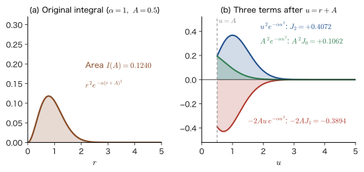
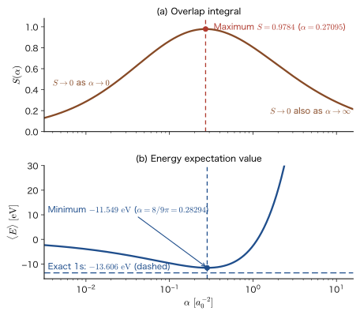
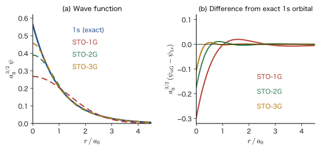
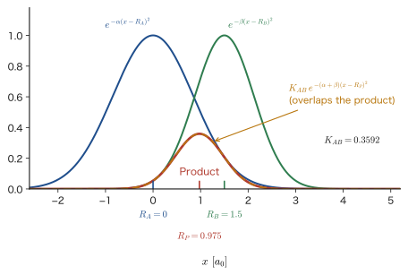
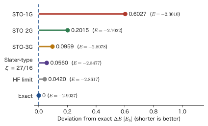

Chapter 32Trial Functions Built from Gaussian Functions — STO-1G and the Helium Atom
In the previous two chapters we used two kinds of trial function: exponential functions such as $e^{-\beta r}$ (Slater type) and bell-shaped functions such as $e^{-\alpha r^2}$ (Gaussian type). If we only want to solve a single hydrogen or helium atom by hand, the Slater type, which is close to the form of the exact solution, is the more natural choice. Inside the commercial programs that compute the electronic states of molecules and solids, however, Gaussian-type functions are overwhelmingly the ones in use. This is because, once there are two or more atoms, we need integrals of functions centered at different points, but the product of two Gaussian functions is again a Gaussian function, so the integrals can be written in closed form. On the other hand, a Gaussian function differs in shape from the exact 1s orbital (it has no cusp at the position of the nucleus, and it decays rapidly far away). This shortcoming is made up for by adding together several Gaussian functions with different exponents so as to imitate the shape of the exact solution.
In this chapter, as a first step, we solve the problem (STO-1G) of imitating the 1s orbital of the hydrogen atom as accurately as possible with a single Gaussian function, using only the tools of completing the square, integration by substitution, integration by parts, and the error function, without skipping a single line. When the best exponent $\alpha$ is determined by the criterion “maximize the overlap integral,” the overlap becomes $0.9784$. Next, for the helium atom, a two-electron problem, we use a single Gaussian function and obtain the total energy by carrying out three integrals: the kinetic energy, the attraction to the nucleus, and the electron–electron repulsion. The electron–electron repulsion integral $1/\abs{\bm{r}_1-\bm{r}_2}$ takes a finite value only when the distance between the two electrons is treated correctly in three dimensions. Finally, from STO-$n$G, which uses several Gaussian functions, and from the Gaussian product theorem, which says that a product of Gaussian functions is again a Gaussian function, we explain why Gaussian-type basis sets became the standard in computational chemistry.
Let us point out one connection with classical physics (AD 03). $e^{-\alpha r^2}$ is also the form of the ground-state wave function of the three-dimensional harmonic oscillator (Chapter 13), and it also appears in the velocity distribution of gas molecules (the Maxwell distribution) and in solutions of the diffusion equation; it is the most commonplace function in physics. The difference is that in quantum mechanics it is a probability amplitude, and that near the nucleus the exact solution has a sharp exponential cusp because of the Coulomb potential. The Gaussian function is “too smooth,” and this difference is the cause of the error. Estimating this error numerically (about 15% for hydrogen and about 21% for helium) is also an aim of this chapter.
- Be able to distinguish the two kinds of “normalization” of the Gaussian function $e^{-\alpha r^2}$ (the integral of the function is $1$; the integral of its square is $1$), and to derive the normalization constant $(2\alpha/\pi)^{3/4}$ that is correct for a wave function
- Be able to calculate analytically, using completing the square, integration by parts, and the error function, the overlap integral $S(\alpha)$ between the 1s orbital of the hydrogen atom and a Gaussian function, and to find $\alpha=0.27095$, which maximizes $S(\alpha)$
- Be able to explain the pitfalls (overflow and loss of significance) in evaluating the expression for $S(\alpha)$ numerically, and how to avoid them (erfcx)
- Be able to explain with numbers the difference between the $\alpha$ that maximizes the overlap and the $\alpha=8/(9\pi)$ that minimizes the energy, and how the accuracy improves in STO-2G and STO-3G
- Be able to calculate the total energy of the helium atom with a single Gaussian function, and to derive the electron–electron repulsion integral $2\sqrt{\alpha/\pi}$ by using the angular average $1/r_{\gt}$ of $1/\abs{\bm{r}_1-\bm{r}_2}$
- Be able to derive the Gaussian product theorem and the overlap integral between Gaussian functions, and to explain why Gaussian-type basis sets are used in computational chemistry (multicenter integrals)
Source notes: Yasuhide Mochizuki, “Physics Notes: Quantum Mechanics 3,” pp. 36–41 (pp. 40 and 42–44 are blank).
32.1 Gaussian Functions and Normalization — Two Kinds of “1”
32.1.1 What is a Gaussian function?
Let $r=\abs{\bm{r}}$ be the distance from the atomic nucleus (the origin). A function whose exponent is the square of the distance,
\begin{equation} \phi(r)=N\,e^{-\alpha r^2}\qquad(\alpha\gt0) \label{eq:32-gauss} \end{equation}is called a (spherically symmetric, that is, s-type) Gaussian function. Here $N$ is the normalization constant, and we call $\alpha$ the Gaussian exponent. The larger $\alpha$ is, the more narrowly and sharply the function is concentrated around the origin, and the smaller it is, the more it spreads out (the distance at which $\phi$ falls to $1/\mathrm{e}$ times its value is $1/\sqrt{\alpha}$). In this chapter $\alpha$ denotes only this Gaussian exponent. It is distinct from the $\alpha$ of the spin function ($\ket{\uparrow}$, Part VII) and from the fine-structure constant $\alpha$ (Part XI).
In contrast, a function whose exponent is the first power of the distance, such as the 1s orbital $e^{-Zr/a_0}$ of a hydrogen-like atom, is called a Slater-type function (Slater-type orbital, STO), and a function of Gaussian form is called a Gaussian-type orbital (GTO). An STO has the correct shape but, as we will see in Section 32.6, its integrals are difficult in calculations on molecules and solids. A GTO does not have the correct shape, but its integrals are easy. The theme of this chapter is how accurately we can make such GTOs imitate an STO.
The Gaussian function takes its maximum value $N$ at the origin, and since $\dd\phi/\dd r=-2\alpha r\,N e^{-\alpha r^2}$, its slope at the origin is $0$ (a bell shape). By contrast, the slope of the exact 1s orbital $e^{-Zr/a_0}$ at the origin is $-Z/a_0\times$(the value at the origin), which is not $0$ (the cusp, Section 30.5.5). Moreover, because the Gaussian function decays rapidly as $e^{-\alpha r^2}$ far from the nucleus, it cannot reproduce the tail of the exponential function $e^{-Zr/a_0}$ (the slow decay at large $r$). These two points are what is meant by saying that the Gaussian function “has a different shape from the exact answer.”
Math Tool: The Gaussian integral and integral formulas
Starting from $\displaystyle\int_{-\infty}^{\infty}e^{-\alpha x^2}\dd x=\sqrt{\pi/\alpha}$ (the Gaussian integral; University Mathematics, Chapter 7, Section 7.5), we obtain the following formulas, which we use repeatedly in this chapter.
Formula 32.1: Gaussian integral formulas
Let $\alpha\gt0$ and $m=0,1,2,\dots$ (the first equation can be extended, using the $\Gamma$ function, to real numbers $m\gt-1$; the second equation contains $(2m-1)!!$, so $m$ must be an integer). Then
\begin{equation} \int_0^{\infty}x^{2m+1}e^{-\alpha x^2}\dd x=\frac{m!}{2\alpha^{m+1}}\ \biggl(=\frac{\Gamma(m+1)}{2\alpha^{m+1}}\biggr),\qquad \int_0^{\infty}x^{2m}e^{-\alpha x^2}\dd x=\frac{(2m-1)!!}{2^{m+1}\alpha^{m}}\sqrt{\frac{\pi}{\alpha}} \label{eq:32-formula} \end{equation}where $(2m-1)!!=(2m-1)(2m-3)\cdots3\cdot1$ and $(-1)!!=1$.
Derivation
For the first equation, we integrate by substitution, letting $t=\alpha x^2$. Since $\dd t=2\alpha x\dd x$ and $x^{2m+1}\dd x=x^{2m}\cdot x\dd x=(t/\alpha)^m\dfrac{\dd t}{2\alpha}$,
$$ \int_0^{\infty}x^{2m+1}e^{-\alpha x^2}\dd x=\frac{1}{2\alpha^{m+1}}\int_0^{\infty}t^m e^{-t}\dd t=\frac{\Gamma(m+1)}{2\alpha^{m+1}}=\frac{m!}{2\alpha^{m+1}} $$(here we used the definition of the gamma function $\Gamma(m+1)=\int_0^\infty t^me^{-t}\dd t$ and $\Gamma(m+1)=m!$; University Mathematics, Chapter 32, Section 32.2). The “$(1/2)!$” that appears when we substitute $m=\tfrac12$ means $\Gamma(\tfrac32)$ (next subsection and Example 32.2). For the second equation, we repeat integration by parts, lowering the degree by two each time:
$$ \int_0^{\infty}x^{2m}e^{-\alpha x^2}\dd x=\int_0^\infty x^{2m-1}\cdot xe^{-\alpha x^2}\dd x =\Bigl[x^{2m-1}\cdot\frac{e^{-\alpha x^2}}{-2\alpha}\Bigr]_0^\infty+\frac{2m-1}{2\alpha}\int_0^\infty x^{2m-2}e^{-\alpha x^2}\dd x $$(for $m\ge1$ the boundary term is $0$). The value for $m=0$ is half the Gaussian integral, $\tfrac12\sqrt{\pi/\alpha}$. Applying the recurrence relation $I_m=\dfrac{2m-1}{2\alpha}I_{m-1}$ $m$ times gives the second equation.
∎
32.1.2 Normalization so that “the integral of the function is 1”
Let us determine the constant $N$ of the Gaussian function in Eq. \eqref{eq:32-gauss}. First, let us try fixing it so that the integral of the function itself over all space equals $1$. We use the volume element of spherical coordinates $\dd^3r=r^2\sin\theta\,\dd r\,\dd\theta\,\dd\varphi$ ($\varphi$ is the azimuthal angle), and, since $\phi$ is independent of the angles, we first carry out the angular integral, $\displaystyle\int_0^{2\pi}\dd\varphi\int_0^\pi\sin\theta\,\dd\theta=2\pi\cdot2=4\pi$. Then
\begin{equation} \int\phi\,\dd^3r=N\cdot4\pi\int_0^\infty r^2e^{-\alpha r^2}\dd r=1 \label{eq:32-Nint-cond} \end{equation}holds. For the radial integral, we set $2m+1=2$, that is, $m=\tfrac12$, in the first equation of Formula \eqref{eq:32-formula}, and use $\Gamma(\tfrac32)=\tfrac12\Gamma(\tfrac12)=\tfrac12\sqrt{\pi}=\dfrac{\sqrt{\pi}}{2}$ ($\Gamma(x+1)=x\Gamma(x)$ and $\Gamma(\tfrac12)=\sqrt{\pi}$), which gives
\begin{equation} \int_0^\infty r^2e^{-\alpha r^2}\dd r=\frac{(1/2)!}{2\alpha^{3/2}}=\frac{\sqrt{\pi}/2}{2\alpha^{3/2}}=\frac{\sqrt{\pi}}{4\alpha^{3/2}} \label{eq:32-r2int} \end{equation}Therefore, from $N\cdot4\pi\cdot\dfrac{\sqrt{\pi}}{4\alpha^{3/2}}=1$ we obtain
$$ N=\frac{1}{4\pi}\cdot\frac{4\alpha^{3/2}}{\sqrt{\pi}}=\frac{\alpha^{3/2}}{\pi^{3/2}}=\Bigl(\frac{\alpha}{\pi}\Bigr)^{3/2} $$This calculation itself is correct. However, it is a normalization in which “$\phi$ is regarded as a probability density and the total probability is made $1$.” For example, the distribution of points thrown at random in three-dimensional space, $\rho(\bm{r})=(\alpha/\pi)^{3/2}e^{-\alpha r^2}$ (a normal distribution in which the standard deviation of each coordinate is $1/\sqrt{2\alpha}$), has this form. For the quantum-mechanical wave function $\phi$, however, it is not the integral of $\phi$ itself but the integral of $\abs{\phi}^2$ that gives a probability, so this $N$ cannot be used.
32.1.3 Normalization as a wave function
According to the Born interpretation (Chapter 8), the probability of finding the electron in a volume $\dd^3r$ near the position $\bm{r}$ is $\abs{\phi(\bm{r})}^2\dd^3r$. We therefore determine $N$ from the condition that the probability of finding the electron in all space is $1$, that is, the normalization condition:
\begin{equation} \braket{\phi}{\phi}=\int\abs{\phi}^2\dd^3r=\int_0^{2\pi}\!\!\dd\varphi\int_0^\pi\!\!\sin\theta\,\dd\theta\int_0^\infty\!\!\abs{\phi(r)}^2r^2\dd r=1 \label{eq:32-norm-cond} \end{equation}Since $\abs{\phi}^2=N^2e^{-2\alpha r^2}$, the radial integral is $\dfrac{\sqrt{\pi}}{4(2\alpha)^{3/2}}$, obtained from Eq. \eqref{eq:32-r2int} by replacing $\alpha\to2\alpha$. Hence
$$ \braket{\phi}{\phi}=N^2\cdot4\pi\cdot\frac{\sqrt{\pi}}{4(2\alpha)^{3/2}}=N^2\Bigl(\frac{\pi}{2\alpha}\Bigr)^{3/2}=1 \qquad\therefore\quad N=\Bigl(\frac{2\alpha}{\pi}\Bigr)^{3/4} $$(we used $4\pi\cdot\sqrt{\pi}/4=\pi^{3/2}$). Let us summarize the result.
Definition 32.1: The normalized s-type Gaussian function
We define the s-type Gaussian function with Gaussian exponent $\alpha\gt0$, normalized as a wave function in three-dimensional polar coordinates, as
\begin{equation} \phi_\alpha(r)=\Bigl(\frac{2\alpha}{\pi}\Bigr)^{3/4}e^{-\alpha r^2},\qquad\int\abs{\phi_\alpha}^2\dd^3r=1 \label{eq:32-phi-alpha} \end{equation}Hereafter, when we write “Gaussian function” in this chapter, it means this normalized function unless otherwise stated.
The factor $(2\alpha/\pi)^{3/4}$ that appears here is obtained from the “integral of the function is $1$” normalization $(\alpha/\pi)^{3/2}$ by replacing $\alpha$ with $2\alpha$ (because the exponent of $\abs{\phi}^2$ is $2\alpha$) and taking the square root: $\bigl[(2\alpha/\pi)^{3/2}\bigr]^{1/2}=(2\alpha/\pi)^{3/4}$. Let us also check the dimensions. Since $\abs{\phi}^2\dd^3r$ is a dimensionless probability, the dimension of $\phi$ is (length)$^{-3/2}$, and since $\alpha$ has the dimension (length)$^{-2}$, $(2\alpha/\pi)^{3/4}$ also has the dimension (length)$^{-3/2}$, which is consistent ($(\alpha/\pi)^{3/2}$ has the dimension (length)$^{-3}$, which is the dimension of a probability density).
Caution: Do not confuse the two meanings of normalization
The $N=(\alpha/\pi)^{3/2}$ obtained from “$\int\phi\,\dd^3r=1$” (normalization as a probability density) and the $N=(2\alpha/\pi)^{3/4}$ obtained from “$\int\abs{\phi}^2\dd^3r=1$” (normalization as a wave function) are different. As in Example 32.1 below, even the numerical values differ greatly. For a wave function, use the latter. If the former is used, then, for example, the overlap integral $\braket{\psi_{1\mathrm{s}}}{\phi}$ loses its meaning as “the magnitude of the overlap” (the property that this quantity cannot exceed 1, that is, the Schwarz inequality, can no longer be applied).
Example 32.1: The normalization constant of a Gaussian function, and the effect of mixing up the two
For the Gaussian exponent $\alpha=0.27095\ a_0^{-2}$ (this value appears in the next section as the exponent “closest to the 1s orbital of the hydrogen atom”), find (a) the $N$ that satisfies $\int\abs{\phi}^2\dd^3r=1$ and (b) the $N$ that satisfies $\int\phi\,\dd^3r=1$. (c) If the $N$ of (b) is used for the wave function, what is the norm $\braket{\phi}{\phi}$?
Solution. (a) Putting $2\alpha/\pi=0.54190/3.14159=0.172492$ into $N=(2\alpha/\pi)^{3/4}$ gives $0.172492^{3/4}=\exp\bigl(\tfrac34\ln0.172492\bigr)=\exp\bigl(\tfrac34\times(-1.757\,05)\bigr)=\exp(-1.317\,79)=0.2677$. The unit is $a_0^{-3/2}$.
(b) With $N=(\alpha/\pi)^{3/2}$ and $\alpha/\pi=0.086\,246$, we get $0.086\,246^{3/2}=0.086\,246\times\sqrt{0.086\,246}=0.086\,246\times0.293\,677=0.02533$, and the unit is $a_0^{-3}$.
(c) Substitute $N=(\alpha/\pi)^{3/2}$ into Eq. \eqref{eq:32-norm-cond}. We have $\braket{\phi}{\phi}=N^2(\pi/2\alpha)^{3/2}=(\alpha/\pi)^3(\pi/2\alpha)^{3/2}=\dfrac{\alpha^{3/2}}{\pi^{3/2}2^{3/2}}=\Bigl(\dfrac{\alpha}{2\pi}\Bigr)^{3/2}$. Since $\alpha/2\pi=0.043\,123$, $\braket{\phi}{\phi}=0.043\,123^{3/2}=0.0090$. That is, for the function with the wrong $N$, the probability of finding the electron in all space is only 0.9% (the probability is not 1).
Example 32.2: The integral formula and $\Gamma(3/2)$, and the average size of a Gaussian function
(a) Derive $\displaystyle\int_0^\infty r^2e^{-\alpha r^2}\dd r=\dfrac{\sqrt{\pi}}{4\alpha^{3/2}}$ in two ways, by integration by substitution (the $\Gamma$ function) and by integration by parts. Also find the value for $\alpha=1$. (b) For the normalized Gaussian function in Eq. \eqref{eq:32-phi-alpha}, find $\expval{r^2}$ and $\expval{r}$, and for $\alpha=0.27095\ a_0^{-2}$ compare them with those of the 1s orbital of the hydrogen atom ($\expval{r}=\tfrac32a_0$, $\expval{r^2}=3a_0^2$).
Solution. (a) Integration by substitution: letting $t=\alpha r^2$, we have $\dd t=2\alpha r\dd r$ and $r^2\dd r=r\cdot r\dd r=\sqrt{t/\alpha}\cdot\dfrac{\dd t}{2\alpha}$, so $\displaystyle\int_0^\infty r^2e^{-\alpha r^2}\dd r=\frac{1}{2\alpha^{3/2}}\int_0^\infty t^{1/2}e^{-t}\dd t=\frac{\Gamma(3/2)}{2\alpha^{3/2}}=\frac{\sqrt{\pi}/2}{2\alpha^{3/2}}=\frac{\sqrt{\pi}}{4\alpha^{3/2}}$. Integration by parts: since $r^2e^{-\alpha r^2}=r\cdot\bigl(-\tfrac{1}{2\alpha}\bigr)\dfrac{\dd}{\dd r}e^{-\alpha r^2}$, we have $\displaystyle\int_0^\infty r^2e^{-\alpha r^2}\dd r=\Bigl[r\cdot\frac{e^{-\alpha r^2}}{-2\alpha}\Bigr]_0^\infty+\frac{1}{2\alpha}\int_0^\infty e^{-\alpha r^2}\dd r=0+\frac{1}{2\alpha}\cdot\frac12\sqrt{\frac{\pi}{\alpha}}=\frac{\sqrt{\pi}}{4\alpha^{3/2}}$ (the boundary term is $0$ at $r=0$ and $0$ as $r\to\infty$). The two results agree. For $\alpha=1$, $\sqrt{\pi}/4=1.7725/4=0.4431$, which agrees with the value $0.443\,11$ from numerical integration.
(b) We use Formula \eqref{eq:32-formula} with $\alpha\to2\alpha$. From the second equation ($m=2$), $\displaystyle\int_0^\infty r^4e^{-2\alpha r^2}\dd r=\frac{3}{2^{3}(2\alpha)^2}\sqrt{\frac{\pi}{2\alpha}}=\frac{3\sqrt{\pi}}{8(2\alpha)^{5/2}}$, and from the first equation ($m=1$), $\displaystyle\int_0^\infty r^3e^{-2\alpha r^2}\dd r=\frac{1!}{2(2\alpha)^2}=\frac{1}{8\alpha^2}$. Therefore
$$ \expval{r^2}=4\pi N^2\int_0^\infty r^4e^{-2\alpha r^2}\dd r=4\pi\Bigl(\frac{2\alpha}{\pi}\Bigr)^{3/2}\frac{3\sqrt{\pi}}{8(2\alpha)^{5/2}}=\frac{3}{4\alpha},\qquad \expval{r}=4\pi N^2\int_0^\infty r^3e^{-2\alpha r^2}\dd r=\frac{4\pi}{8\alpha^2}\Bigl(\frac{2\alpha}{\pi}\Bigr)^{3/2}=\sqrt{\frac{2}{\pi\alpha}} $$Substituting $\alpha=0.27095$, we obtain $\expval{r^2}=3/(4\times0.27095)=2.768\ a_0^2$ and $\expval{r}=\sqrt{2/(\pi\times0.27095)}=\sqrt{2.3496}=1.533\ a_0$. These are quite close to $\expval{r^2}=3\ a_0^2$ and $\expval{r}=1.5\ a_0$ of the 1s orbital of hydrogen (the difference in $\expval{r}$ is 2%).
Intuition: The Gaussian function is the ground state of a harmonic oscillator
The ground-state wave function of the one-dimensional harmonic oscillator is $\psi_0\propto e^{-m\omega x^2/2\hbar}$ (Chapter 13), and the ground state of the three-dimensional isotropic harmonic oscillator is $\propto e^{-m\omega r^2/2\hbar}$ (Section 14.7.4). Hence the Gaussian function $e^{-\alpha r^2}$ has the same form as the ground state of a harmonic oscillator with $\alpha=m_{\mathrm e}\omega/(2\hbar)$. “Taking a Gaussian function as the trial function and minimizing the energy of the atom” is the same as “confining the electron in a hypothetical harmonic-potential well and choosing the strength $\omega$ of that well so that the energy of the atom is minimized.” This also explains why the kinetic energy comes out as $\expval{T}=\tfrac32\alpha\,\hbar^2/m_{\mathrm e}=\tfrac34\hbar\omega$ (half of the zero-point energy $\tfrac32\hbar\omega$ of the harmonic oscillator; the virial theorem).
32.2 The Idea of STO-1G — Maximizing the Overlap
32.2.1 Constructing a Gaussian function “close” to the 1s orbital of the hydrogen atom
The exact solution for the ground state of a hydrogen-like atom with nuclear charge $Ze_0$ (one electron), that is, the 1s orbital, is given by (Chapter 15, Section 15.7)
\begin{equation} \psi_{1\mathrm{s}}(r)=\frac{1}{\sqrt{\pi}}\Bigl(\frac{Z}{a_0}\Bigr)^{3/2}e^{-Zr/a_0} \label{eq:32-psi1s} \end{equation}where $Z=1$ is the hydrogen atom. The normalization can be checked by $\displaystyle\int\abs{\psi_{1\mathrm{s}}}^2\dd^3r=4\pi\cdot\frac{1}{\pi}\Bigl(\frac{Z}{a_0}\Bigr)^3\int_0^\infty r^2e^{-2Zr/a_0}\dd r=4\Bigl(\frac{Z}{a_0}\Bigr)^3\cdot\frac{2}{(2Z/a_0)^3}=1$ (we used $\displaystyle\int_0^\infty r^2e^{-\beta r}\dd r=\frac{\Gamma(3)}{\beta^3}=\frac{2}{\beta^3}$. Substituting $t=\beta r$ turns it into the definition of the $\Gamma$ function, $\Gamma(3)=\int_0^\infty t^2e^{-t}\dd t=2$. Here the exponent is the first power of the distance, so we use the definition of the $\Gamma$ function rather than the Gaussian-type Formula 32.1). Note that the prefactor is $1/\sqrt{\pi}$, not $1/\pi$. That $a_{\mathrm B}$ of the related simulator is the same quantity as $a_0$ of this book was stated in Section 30.5.1.
Why construct an approximate function when the correct one is known? The reason is that for molecules and solids the form of the correct answer is not written down anywhere. So we first prepare “building blocks” (basis functions) that can be used in common for many atoms and molecules, using the hydrogen-like atom, for which the correct answer is known. If we use Gaussian functions as the building blocks, we must first decide, “for what value of the exponent $\alpha$ does a single Gaussian function come closest to the 1s orbital?” This is the problem of this section and the next.
The simplest yardstick for measuring “closeness” is the overlap of two functions. The larger the overlap (the closer to $1$), the more alike the two functions are.
Definition 32.2: Overlap integral
The overlap integral of two normalized real functions $\psi(\bm{r})$ and $\phi(\bm{r})$ is defined by
\begin{equation} S=\braket{\psi}{\phi}=\int\psi(\bm{r})\,\phi(\bm{r})\dd^3r \label{eq:32-S-def} \end{equation}For normalized functions, $\abs{S}\le1$, and $S=1$ holds only when $\phi=\psi$ (the Schwarz inequality).
Proof: $\abs{S}\le1$ (the Schwarz inequality)
Using the real constant $S=\braket{\psi}{\phi}$, consider the integral of the square of $\psi-S\phi$. Since a square is never negative, using the normalization $\int\psi^2\dd^3r=\int\phi^2\dd^3r=1$ we have
$$ 0\le\int(\psi-S\phi)^2\dd^3r=\int\psi^2\dd^3r-2S\int\psi\phi\,\dd^3r+S^2\int\phi^2\dd^3r=1-2S\cdot S+S^2=1-S^2 $$Therefore $S^2\le1$, that is, $\abs{S}\le1$. Equality $S^2=1$ holds when the integral of $(\psi-S\phi)^2$ is $0$, that is, only when $\psi=S\phi$ everywhere, and if $S=+1$ then $\psi=\phi$ (if $S=-1$, then $\psi=-\phi$). Also, the integral of the square of the difference of two normalized functions is $\int(\psi-\phi)^2\dd^3r=2-2S$, which shows that the closer $S$ is to $1$, the smaller the difference between the two functions.
∎
This property can be understood by analogy with the inner product of vectors. A normalized function is a vector of length $1$ in function space (Section 10.2), and the overlap integral corresponds to the inner product of two unit vectors, that is, to $\cos\theta$ of the angle $\theta$ between them. If two vectors point in the same direction, $\cos\theta=1$; if they are orthogonal, it is $0$. Bringing $\phi$ close to $\psi$ means bringing the “direction” of $\phi$ close to the direction of $\psi$, that is, bringing $S$ close to $1$.
32.2.2 Definition of the overlap integral $S(\alpha)$
We write $S(\alpha)$ for the overlap integral of the 1s orbital in Eq. \eqref{eq:32-psi1s} and the normalized Gaussian function with Gaussian exponent $\alpha$ in Eq. \eqref{eq:32-phi-alpha}. In spherical coordinates it reads
$$ S(\alpha)=\int_0^{2\pi}\!\!\int_0^{\pi}\!\!\int_0^{\infty}\psi_{1\mathrm{s}}(r)\,\phi_\alpha(r)\,r^2\sin\theta\,\dd r\,\dd\theta\,\dd\varphi $$Since $\psi_{1\mathrm{s}}$ and $\phi_\alpha$ in the integrand are functions of $r$ only, the angular part can be integrated independently, and we obtain
$$ S(\alpha)=\int_0^{2\pi}\dd\varphi\int_0^\pi\sin\theta\,\dd\theta\int_0^\infty\psi_{1\mathrm{s}}(r)\,\phi_\alpha(r)\,r^2\dd r =2\pi\cdot2\int_0^\infty\psi_{1\mathrm{s}}(r)\,\phi_\alpha(r)\,r^2\dd r $$Here $\int_0^\pi\sin\theta\,\dd\theta=[-\cos\theta]_0^\pi=2$. Substituting $\psi_{1\mathrm{s}}$ and $\phi_\alpha$, we have
\begin{equation} S(\alpha)=4\pi\cdot\frac{1}{\sqrt{\pi}}\Bigl(\frac{Z}{a_0}\Bigr)^{3/2}\Bigl(\frac{2\alpha}{\pi}\Bigr)^{3/4}\int_0^\infty e^{-Zr/a_0}\,e^{-\alpha r^2}\,r^2\dd r =4\sqrt{\pi}\Bigl(\frac{Z}{a_0}\Bigr)^{3/2}\Bigl(\frac{2\alpha}{\pi}\Bigr)^{3/4}\int_0^\infty e^{-Zr/a_0-\alpha r^2}\,r^2\dd r \label{eq:32-S-radial} \end{equation}where $4\pi/\sqrt{\pi}=4\sqrt{\pi}$. The remaining integral $\int_0^\infty e^{-Zr/a_0-\alpha r^2}r^2\dd r$ cannot be evaluated with Formula \eqref{eq:32-formula}, because the exponent mixes a linear expression and a quadratic expression in $r$. We carry it out analytically in the next section. The $\alpha$ that maximizes this $S(\alpha)$ is the exponent of “the Gaussian function closest to the 1s orbital.”
32.2.3 Why maximize the overlap?
The criterion of maximizing the overlap integral is deeply tied to the variational principle (Chapter 30). Let the exact eigenfunctions be $\psi_k$ and their energies $E_k$ ($k=0$ is the ground state 1s, $E_0\le E_1\le\cdots$, with the continuum states also counted by $k$), and expand the normalized $\phi$ as in Section 30.2: $\phi=\sum_kc_k\psi_k$, $c_k=\braket{\psi_k}{\phi}$. From the normalization $\braket{\phi}{\phi}=1$ we have $\sum_k\abs{c_k}^2=1$. Since the ground-state coefficient $c_0=\braket{\psi_{1\mathrm{s}}}{\phi}=S$ is the overlap integral, the energy expectation value is
$$ \expval{E}=\mel{\phi}{\hat{H}}{\phi}=\sum_k\abs{c_k}^2E_k,\qquad \expval{E}-E_0=\sum_{k\ge1}\abs{c_k}^2\,(E_k-E_0)\ \ge\ (E_1-E_0)\sum_{k\ge1}\abs{c_k}^2=(E_1-E_0)\,(1-S^2) $$Here we used $E_k-E_0\ge E_1-E_0$ for each term with $k\ge1$, and wrote $\sum_{k\ge1}\abs{c_k}^2=1-\abs{c_0}^2=1-S^2$. In other words, the energy error cannot be smaller than the product of the fraction $1-S^2$ by which the ground-state component is missing and the minimum value $E_1-E_0$ of the excitation energy. $S^2=\abs{c_0}^2$ is the fraction (probability) of “how much of the exact ground state is contained in the trial function,” and making $S$ larger means making the lower bound of the energy error smaller.
However, this is a lower bound on the energy, and the $\alpha$ that maximizes $S$ is not necessarily the $\alpha$ that minimizes $\expval{E}$. That the two actually differ slightly will be confirmed in Section 32.4.4. The overlap integral is a quantity that can be defined without computing the energy (that is, without using the Hamiltonian), so it is convenient for fixing the basis functions “only once, in advance.”
32.2.4 Atomic units, and why we may set $Z$ to 1
Since $a_0$ and $Z$ will appear in the equations many times from now on, we use atomic units to simplify them. We take the Bohr radius $a_0$ as the unit of length and the Hartree energy $E_{\mathrm h}=\dfrac{e_0^2}{4\pi\varepsilon_0a_0}=\dfrac{\hbar^2}{m_{\mathrm e}a_0^2}=27.211\,386\ \mathrm{eV}$ as the unit of energy, and set $\hbar=m_{\mathrm e}=e_0^2/(4\pi\varepsilon_0)=1$. Then $a_0=1$, Eq. \eqref{eq:32-psi1s} becomes $\psi_{1\mathrm{s}}(r)=\dfrac{1}{\sqrt{\pi}}Z^{3/2}e^{-Zr}$, and there is no longer any need to write $a_0$. The Gaussian exponent $\alpha$ becomes a number measured in units of $a_0^{-2}$, and the energy becomes a number measured in units of $E_{\mathrm h}$. We shall introduce this system of units afresh in Chapter 33, from the viewpoint of nondimensionalizing equations. In this chapter, it may be regarded as merely a convention about “measuring length in multiples of $a_0$ and energy in multiples of $E_{\mathrm h}$.” An equation that retains $a_0$ becomes the equation in atomic units just as it is if we replace the length by the dimensionless number $r/a_0$ and the Gaussian exponent by the dimensionless number $\alpha a_0^2$ (for example, $Zr/a_0\to Zr$, $\alpha r^2\to(\alpha a_0^2)(r/a_0)^2$).
The overlap integral $S$ is a dimensionless quantity, so it is independent of whether $a_0$ is written.
Next we explain the meaning of computing with a general value of the nuclear charge $Z$. Changing variables to $r=r'/Z$ in Eq. \eqref{eq:32-S-radial} (in atomic units), we have $r^2\dd r=r'^2\dd r'/Z^3$, $e^{-Zr}=e^{-r'}$, and $e^{-\alpha r^2}=e^{-(\alpha/Z^2)r'^2}$, and we obtain
\begin{equation} S(\alpha;Z)=4\sqrt{\pi}\,Z^{3/2}\Bigl(\frac{2\alpha}{\pi}\Bigr)^{3/4}\frac{1}{Z^3}\int_0^\infty e^{-r'-(\alpha/Z^2)r'^2}r'^2\dd r'=S\Bigl(\frac{\alpha}{Z^2};1\Bigr) \label{eq:32-Sscale} \end{equation}(If we push the prefactor $Z^{3/2}\cdot Z^{-3}=Z^{-3/2}$ into $(2\alpha/\pi)^{3/4}$, then since $(Z^{-2})^{3/4}=Z^{-3/2}$ it becomes $\bigl(2\alpha/(Z^2\pi)\bigr)^{3/4}$. This is none other than the prefactor $\bigl(2(\alpha/Z^2)/\pi\bigr)^{3/4}$ of $S(\alpha/Z^2;1)$.) That is, the overlap integral for nuclear charge $Z$ is the overlap integral for $Z=1$ with $\alpha$ divided by $Z^2$. The best exponent is $\alpha_{\mathrm{opt}}(Z)=Z^2\alpha_{\mathrm{opt}}(1)$, and the maximum value of the overlap is independent of $Z$. This property reflects the fact that the size of the 1s orbital shrinks to $a_0/Z$ (the scaling of Section 18.1). Below, unless stated otherwise, we use atomic units and carry out the calculation keeping $Z$ (because the results will also be used for helium, with $Z=2$).
32.2.5 The name STO-$n$G
An approximation of a single Slater-type function $e^{-\zeta r}$ ($\zeta$ is the orbital exponent) by a linear combination of $n$ Gaussian functions, $\sum_{i=1}^n d_i\,e^{-\alpha_ir^2}$, is called STO-$n$G (a Slater-type orbital approximated by $n$ Gaussians; read letter by letter as “S-T-O-n-G”). What we consider in this section and the next is the case $n=1$, that is, STO-1G, in which a single Gaussian function imitates a single 1s Slater function ($\zeta=1$, the hydrogen atom). The cases $n=2,3$ are treated in Sections 32.4 and 32.6.
Example 32.3: Seeing the overlap integral numerically as $\alpha$ varies
For the hydrogen atom ($Z=1$, atomic units), numerically integrate the overlap integral $S(\alpha)=4\sqrt{\pi}\,(2\alpha/\pi)^{3/4}\displaystyle\int_0^\infty e^{-r-\alpha r^2}r^2\dd r$ for $\alpha=0.05,\ 0.271,\ 1,\ 5$. Also, from the results, state the physical meaning of the cases in which $\alpha$ is too small and too large.
Solution. Carrying out the numerical integration (the trapezoidal rule or a numerical library will do; it is enough to take the integration interval from $r=0$ to about $40\ a_0$, where the integrand has become sufficiently small), we obtain
| $\alpha$ ($a_0^{-2}$) | $0.05$ | $0.271$ | $1$ | $5$ |
|---|---|---|---|---|
| $\displaystyle\int_0^\infty e^{-r-\alpha r^2}r^2\dd r$ | $1.2864$ | $0.5155$ | $0.1592$ | $0.02446$ |
| Prefactor $4\sqrt{\pi}\,(2\alpha/\pi)^{3/4}$ | $0.5343$ | $1.8979$ | $5.0530$ | $16.896$ |
| Overlap integral $S(\alpha)$ | $0.6873$ | $0.9784$ | $0.8046$ | $0.4132$ |
Comparison with the analytic expression. The value for $\alpha=1$ can also be calculated by hand from Eq. \eqref{eq:32-S-complete} ($Z=1$), which we derive in the next section. Since $\dfrac{2\alpha+Z^2}{8\alpha^2}=\dfrac38$, $\sqrt{\pi/\alpha}=\sqrt{\pi}=1.77245$, and $e^{Z^2/4\alpha}\operatorname{erfc}\bigl(Z/2\sqrt{\alpha}\bigr)=e^{1/4}\operatorname{erfc}(0.5)=1.28403\times0.47950=0.61569$, the quantity in brackets is $\tfrac38\times1.77245\times0.61569-\tfrac14=0.40923-0.25=0.15923$. This is none other than the integral value $0.1592$ in Table 32.1, and multiplying by the prefactor $5.0530$ gives $S(1)=5.0530\times0.15923=0.8046$, which agrees with the value from the numerical integration.
$S$ comes closest to $1$ near $\alpha=0.271$. The Gaussian function with $\alpha=0.05$ is spread out far more than the 1s orbital ($\expval{r}=\sqrt{2/(\pi\alpha)}=3.57\ a_0$) and cannot cover the high peak near the nucleus. The Gaussian function with $\alpha=5$, conversely, is sharply contracted ($\expval{r}=0.36\ a_0$) and does not overlap the tail of the 1s orbital (the broad region $r\gtrsim2\ a_0$). In both cases $S$ is small. Figure 32.1 (a) shows this.
![Comparison of the 1s orbital of the hydrogen atom and Gaussian functions. (a) Wave function ψ(r). The exact 1s orbital has a cusp at the origin, whereas the Gaussian functions are smooth at the origin. The one with exponent α = 0.05 is spread out too much and the one with α = 5 is contracted too much (it reaches 2.38 at the origin); the one with α = 0.27095 is closest to the 1s orbital. (b) Radial distribution 4πr²|ψ|². The distribution of the Gaussian function with α = 0.27095 is close to that of the 1s orbital, but its peak is somewhat farther out (1.36 a0 versus 1 a0) and higher (0.61 versus 0.54), and its tail is shorter. (c) Enlargement near the origin: the slope of the 1s orbital is not 0, whereas the slope of the Gaussian function is 0](figs/ch32_fig32-1.svg)
Example 32.4: A lower bound on the energy error estimated from the overlap
For the 1s orbital of the hydrogen atom ($Z=1$), the overlap integral of the Gaussian function with $\alpha=0.27095$ is $S=0.9784$. Using the inequality of Section 32.2.3, find a lower bound on $\expval{E}-E_0$ in eV. Compare it with the actual value ($\expval{E}=-11.5436\ \mathrm{eV}$ for the Gaussian function and $E_0=-13.6057\ \mathrm{eV}$).
Solution. The minimum excitation energy is the difference from the $n=2$ level of hydrogen, $E_1-E_0=-\tfrac18E_{\mathrm h}-\bigl(-\tfrac12E_{\mathrm h}\bigr)=\tfrac38E_{\mathrm h}=0.375\times27.2114\ \mathrm{eV}=10.204\ \mathrm{eV}$. Also, since $1-S^2=1-0.9784^2=1-0.95727=0.04273$, the lower bound is $10.204\times0.04273=0.436\ \mathrm{eV}$. The actual error is $-11.5436-(-13.6057)=2.062\ \mathrm{eV}$, which is indeed larger than the lower bound ($0.44\ \mathrm{eV}$). The lower bound is about one fifth of the actual error because most of the excited-state components mixed into the Gaussian function lie in states much higher than $E_1$ (including continuum states). We can also read off that although the overlap $S$ is close to $1$ ($S^2=0.957$, that is, $95.7\ \%$ of the trial function is the 1s orbital component), the energy error is large (about $15\ \%$).
32.3 Computing the Overlap Integral — Completing the Square, the Error Function, and Integration by Parts
32.3.1 Completing the square in the exponent
We compute the radial integral $\displaystyle\int_0^\infty e^{-Zr/a_0-\alpha r^2}r^2\dd r$ in Eq. \eqref{eq:32-S-radial}. In this section, we first carry out the calculation keeping the Bohr radius $a_0$ (through Section 32.3.4), and then rewrite the result in atomic units (Section 32.3.5).
Tedious as it is, we derive it carefully
From here on, the equations get long. However, we use only four tools: completing the square, integration by substitution, integration by parts, and the error function. If you follow the calculation one line at a time, checking “what was done” on each line, you will not get lost along the way. The overall flow of the calculation has five stages: “combine the linear and quadratic terms in $r$ in the exponent into the single term $(r+A)^2$ by completing the square” → “substitute $u=r+A$, and rewrite the $r^2$ in the integrand as $(u-A)^2$” → “split into three integrals” → “evaluate each of them by integration by parts and the error function” → “add them up.”
We complete the square in the exponent with respect to $r$. Factoring $-\alpha$ out of $-\alpha r^2-\dfrac{Z}{a_0}r$ and forming $(r+A)^2=r^2+2Ar+A^2$ (let $2A=\dfrac{Z}{a_0\alpha}$), the exponent becomes
\begin{equation} \begin{aligned} -\alpha r^2-\frac{Z}{a_0}r&=-\alpha\Bigl(r^2+\frac{Z}{a_0\alpha}\,r\Bigr)=-\alpha\Bigl\{\Bigl(r+\frac{Z}{2a_0\alpha}\Bigr)^2-\Bigl(\frac{Z}{2a_0\alpha}\Bigr)^2\Bigr\}\\ &=-\alpha\Bigl(r+\frac{Z}{2a_0\alpha}\Bigr)^2+\alpha\,\frac{Z^2}{4a_0^2\alpha^2}=-\alpha(r+A)^2+\frac{Z^2}{4a_0^2\alpha} \end{aligned}\qquad\Bigl(A\equiv\frac{Z}{2a_0\alpha}\Bigr) \label{eq:32-complete-square} \end{equation}Here $\alpha A^2=\dfrac{Z^2}{4a_0^2\alpha}$. Therefore, $e^{-Zr/a_0-\alpha r^2}=e^{Z^2/(4a_0^2\alpha)}\,e^{-\alpha(r+A)^2}$, and Eq. \eqref{eq:32-S-radial} can be rewritten as
\begin{equation} S(\alpha)=4\sqrt{\pi}\Bigl(\frac{Z}{a_0}\Bigr)^{3/2}\Bigl(\frac{2\alpha}{\pi}\Bigr)^{3/4}e^{Z^2/(4a_0^2\alpha)}\int_0^\infty e^{-\alpha(r+A)^2}\,r^2\dd r \label{eq:32-S-with-A} \end{equation}All that remains is to compute the integral $I(A)\equiv\displaystyle\int_0^\infty e^{-\alpha(r+A)^2}r^2\dd r$. The exponent has become a single clean Gaussian function, so it looks as if replacing $r$ by $r+A$ would let us use Formula \eqref{eq:32-formula}; but because the interval of integration starts at $0$, the substitution changes the lower limit to $A$. For this reason, the value of the Gaussian integral alone is not enough, and the error function, introduced next, is needed.
32.3.2 The error function and the complementary error function
The antiderivative of $e^{-t^2}$ cannot be written in terms of elementary functions (polynomials, exponential functions, trigonometric functions, logarithmic functions, and their compositions). So we define the value of the integral of $e^{-t^2}$ from $0$ to $x$ itself as a new function and give it a name. Defining a new function to represent such an “integral that cannot be written with elementary functions” is a technique often used in mathematics.
Definition 32.3: The error function and the complementary error function
The error function $\operatorname{erf}(x)$ and the complementary error function $\operatorname{erfc}(x)$ are defined by
\begin{equation} \operatorname{erf}(x)=\frac{2}{\sqrt{\pi}}\int_0^xe^{-t^2}\dd t,\qquad \operatorname{erfc}(x)=1-\operatorname{erf}(x)=\frac{2}{\sqrt{\pi}}\int_x^\infty e^{-t^2}\dd t \label{eq:32-erf-def} \end{equation}respectively.
That the two expressions are equal ($1-\operatorname{erf}(x)=\dfrac{2}{\sqrt{\pi}}\displaystyle\int_x^\infty e^{-t^2}\dd t$) follows from the Gaussian integral $\displaystyle\int_0^\infty e^{-t^2}\dd t=\dfrac{\sqrt{\pi}}{2}$. Indeed,
$$ \operatorname{erfc}(x)=1-\operatorname{erf}(x)=\frac{2}{\sqrt{\pi}}\int_0^\infty e^{-t^2}\dd t+\frac{2}{\sqrt{\pi}}\int_x^0e^{-t^2}\dd t=\frac{2}{\sqrt{\pi}}\int_x^\infty e^{-t^2}\dd t $$holds. On the right-hand side of the first equality, we rewrote $1=\dfrac{2}{\sqrt{\pi}}\cdot\dfrac{\sqrt{\pi}}{2}=\dfrac{2}{\sqrt{\pi}}\displaystyle\int_0^\infty e^{-t^2}\dd t$ and subtracted $\operatorname{erf}(x)=-\dfrac{2}{\sqrt{\pi}}\displaystyle\int_x^0e^{-t^2}\dd t$ (the direction of integration was reversed). In the last equality, we joined the intervals of integration $[0,\infty)$ and $[x,0]$ to make $[x,\infty)$.
The coefficient $2/\sqrt{\pi}$ is chosen so that $\operatorname{erf}(x)\to1$ as $x\to\infty$. As in Figure 32.2, of the area $\sqrt{\pi}/2$ under the curve $e^{-t^2}$ for $t\ge0$, the part from $0$ to $x$ corresponds to $\operatorname{erf}(x)$ and the part beyond $x$ corresponds to $\operatorname{erfc}(x)$ (after multiplying by $2/\sqrt{\pi}$). Therefore $\operatorname{erf}(0)=0$, $\operatorname{erfc}(0)=1$, $\operatorname{erf}(\infty)=1$, and $\operatorname{erfc}(\infty)=0$, and $\operatorname{erfc}(x)$ decreases monotonically from $1$ to $0$ as $x$ increases. The function $\operatorname{erf}$ is odd ($\operatorname{erf}(-x)=-\operatorname{erf}(x)$, because the integrand is an even function).
| $x$ | $0$ | $0.5$ | $0.7071$ | $1$ | $2$ | $3$ |
|---|---|---|---|---|---|---|
| $\operatorname{erf}(x)$ | $0$ | $0.5205$ | $0.6827$ | $0.8427$ | $0.99532$ | $0.999978$ |
| $\operatorname{erfc}(x)$ | $1$ | $0.4795$ | $0.3173$ | $0.1573$ | $0.004678$ | $2.21\times10^{-5}$ |
Math Tool: Properties of the error function
The error function is the same thing as the cumulative probability of the normal distribution in statistics. Putting $z=\sqrt{2}\,t$ in the density $\dfrac{1}{\sqrt{2\pi}}e^{-z^2/2}$ of the standard normal distribution, we obtain $P(\abs{Z}\le a)=\operatorname{erf}(a/\sqrt{2})$. For example, for $a=1$ (within $1\sigma$), $\operatorname{erf}(0.7071)=0.6827$, and the probability of lying outside is $\operatorname{erfc}(0.7071)=0.3173$. The definition and properties of the error function are collected in AD 02, Chapter 32, Section 32.1, and its relation to the $\Gamma$ function is given in Section 32.2. The name “error function” comes from the theory of errors.
Example 32.5: Values of the error function and the normal distribution
(a) Verify that $\displaystyle\int_x^\infty e^{-t^2}\dd t=\dfrac{\sqrt{\pi}}{2}\operatorname{erfc}(x)$. (b) Express the probability that a quantity $Z$ obeying the standard normal distribution satisfies $\abs{Z}\gt1$ in terms of the error function, and find its numerical value.
Solution. (a) We only have to multiply both sides of the second expression in the definition, Eq. \eqref{eq:32-erf-def}, by $\sqrt{\pi}/2$. At $x=0$ we get $\dfrac{\sqrt{\pi}}{2}\operatorname{erfc}(0)=\dfrac{\sqrt{\pi}}{2}$, which coincides with half the Gaussian integral.
(b) For the density $p(z)=\dfrac{1}{\sqrt{2\pi}}e^{-z^2/2}$ of the standard normal distribution, $P(\abs{Z}\gt1)=2\displaystyle\int_1^\infty p(z)\dd z$. Let $z=\sqrt{2}\,t$ ($\dd z=\sqrt{2}\dd t$). Then the point $z=1$ corresponds to $t=1/\sqrt{2}$, and $P=2\cdot\dfrac{1}{\sqrt{2\pi}}\sqrt{2}\displaystyle\int_{1/\sqrt2}^\infty e^{-t^2}\dd t=\dfrac{2}{\sqrt{\pi}}\int_{1/\sqrt2}^\infty e^{-t^2}\dd t=\operatorname{erfc}\Bigl(\dfrac{1}{\sqrt{2}}\Bigr)=0.3173$. That is, the probability of falling outside $1\sigma$ is about $31.7\ \%$.
32.3.3 Calculating the integral $I(A)$ — substitution, three terms, and integration by parts
We now finally compute the integral $I(A)=\displaystyle\int_0^\infty e^{-\alpha(r+A)^2}r^2\dd r$. The result, stated first, is as follows.
Formula 32.2: $\displaystyle\int_0^\infty e^{-\alpha(r+A)^2}r^2\dd r$
For $\alpha\gt0$ and $A\ge0$,
\begin{equation} I(A)=\int_0^\infty e^{-\alpha(r+A)^2}r^2\dd r=\Bigl(A^2+\frac{1}{2\alpha}\Bigr)\frac12\sqrt{\frac{\pi}{\alpha}}\,\operatorname{erfc}\bigl(\sqrt{\alpha}\,A\bigr)-\frac{A}{2\alpha}\,e^{-\alpha A^2} \label{eq:32-lemma} \end{equation}Derivation: Substitution, three terms, integration by parts, and the error function
[i] Substitution. Let $u=r+A$. When $r$ runs over $0\to\infty$, $u$ runs over $A\to\infty$, and since $\dd u=\dd r$ and $r=u-A$, we have
$$ I(A)=\int_A^\infty e^{-\alpha u^2}(u-A)^2\dd u =\underbrace{\int_A^\infty u^2e^{-\alpha u^2}\dd u}_{J_2}-2A\underbrace{\int_A^\infty u\,e^{-\alpha u^2}\dd u}_{J_1}+A^2\underbrace{\int_A^\infty e^{-\alpha u^2}\dd u}_{J_0} $$The integral thus splits into three terms ($(u-A)^2=u^2-2Au+A^2$). We compute $J_0,J_1,J_2$ one at a time.
[ii] Third term $J_0$. We substitute again, $t=\sqrt{\alpha}\,u$. At $u=A$ we have $t=\sqrt{\alpha}A$, and $\dd u=\dd t/\sqrt{\alpha}$, so, using the definition of the error function (Example 32.5 (a)),
$$ J_0=\int_{\sqrt{\alpha}A}^\infty e^{-t^2}\frac{1}{\sqrt{\alpha}}\dd t=\frac{1}{\sqrt{\alpha}}\cdot\frac{\sqrt{\pi}}{2}\operatorname{erfc}\bigl(\sqrt{\alpha}A\bigr)=\frac12\sqrt{\frac{\pi}{\alpha}}\operatorname{erfc}\bigl(\sqrt{\alpha}A\bigr) $$[iii] Second term $J_1$. Since $u\,e^{-\alpha u^2}=-\dfrac{1}{2\alpha}\dfrac{\dd}{\dd u}e^{-\alpha u^2}$ gives an antiderivative, we have
$$ J_1=\Bigl[\frac{1}{-2\alpha}e^{-\alpha u^2}\Bigr]_A^\infty=0+\frac{e^{-\alpha A^2}}{2\alpha}=\frac{e^{-\alpha A^2}}{2\alpha} $$[iv] First term $J_2$. Writing $u^2e^{-\alpha u^2}=u\cdot\bigl(u\,e^{-\alpha u^2}\bigr)=u\cdot\Bigl(-\dfrac{1}{2\alpha}\Bigr)\dfrac{\dd}{\dd u}e^{-\alpha u^2}$, we use integration by parts, $\displaystyle\int_A^\infty f\,g'\dd u=[fg]_A^\infty-\int_A^\infty f'g\dd u$ ($f=u$, $g=-\dfrac{1}{2\alpha}e^{-\alpha u^2}$):
$$ J_2=\Bigl[u\cdot\frac{1}{-2\alpha}e^{-\alpha u^2}\Bigr]_A^\infty+\frac{1}{2\alpha}\int_A^\infty e^{-\alpha u^2}\dd u=\frac{A}{2\alpha}e^{-\alpha A^2}+\frac{1}{2\alpha}J_0 $$(For the boundary term, at the upper end $u\to\infty$ we have $u\,e^{-\alpha u^2}\to0$, and at the lower end $-\bigl[A\cdot\frac{1}{-2\alpha}e^{-\alpha A^2}\bigr]=+\frac{A}{2\alpha}e^{-\alpha A^2}$. Also, $-\int f'g\dd u=-\int_A^\infty1\cdot\bigl(-\tfrac{1}{2\alpha}e^{-\alpha u^2}\bigr)\dd u=+\tfrac{1}{2\alpha}J_0$.) The integral that appears in the second term on the right-hand side is exactly the same integral as the third term $J_0$.
[v] Sum of the integrals. Substituting into $I(A)=J_2-2AJ_1+A^2J_0$, we obtain
$$ \begin{aligned} I(A)&=\frac{A}{2\alpha}e^{-\alpha A^2}+\frac{1}{2\alpha}\cdot\frac12\sqrt{\frac{\pi}{\alpha}}\operatorname{erfc}\bigl(\sqrt{\alpha}A\bigr)-2A\cdot\frac{e^{-\alpha A^2}}{2\alpha}+A^2\cdot\frac12\sqrt{\frac{\pi}{\alpha}}\operatorname{erfc}\bigl(\sqrt{\alpha}A\bigr)\\ &=\Bigl(A^2+\frac{1}{2\alpha}\Bigr)\frac12\sqrt{\frac{\pi}{\alpha}}\operatorname{erfc}\bigl(\sqrt{\alpha}A\bigr)-\frac{A}{2\alpha}e^{-\alpha A^2} \end{aligned} $$In the second line, we combined the terms containing $\operatorname{erfc}$ (those with $\tfrac{1}{2\alpha}$ and $A^2$) into one, and combined the terms containing $e^{-\alpha A^2}$ ($\tfrac{A}{2\alpha}-\tfrac{2A}{2\alpha}=-\tfrac{A}{2\alpha}$) into one.
∎
Figure 32.3 shows the geometric meaning of this calculation. The left panel shows that the original integral $I(A)$ is the area under the curve of the integrand $r^2e^{-\alpha(r+A)^2}$. The right panel shows that the substitution $u=r+A$ moves the lower limit of the integral to $A$ and splits the integrand into three terms (subtracting the area $0.389$ of $2AJ_1$ from the area $0.407$ of $J_2$ and adding the area $0.106$ of $A^2J_0$ gives $I(A)=0.124$).

Example 32.6: Checking Formula 32.2 numerically
For $\alpha=1$ and $A=0.5$, compute the three integrals $J_2,\ 2AJ_1,\ A^2J_0$ from the individual parts of the formula, and find $I(A)$. Also compare the result with the value obtained by numerically integrating $\displaystyle\int_0^\infty e^{-(r+0.5)^2}r^2\dd r$.
Solution. We have $e^{-\alpha A^2}=e^{-0.25}=0.778\,801$, $\operatorname{erfc}(0.5)=0.479\,500$, and $\dfrac12\sqrt{\pi/\alpha}=\dfrac12\sqrt{\pi}=0.886\,227$.
$J_0=0.886\,227\times0.479\,500=0.424\,946$, $J_1=\dfrac{0.778\,801}{2}=0.389\,400$, and $J_2=\dfrac{A}{2\alpha}e^{-\alpha A^2}+\dfrac{1}{2\alpha}J_0=0.25\times0.778\,801+0.5\times0.424\,946=0.194\,700+0.212\,473=0.407\,173$. Therefore the three terms are
$$ J_2=0.40717,\qquad2AJ_1=1\times0.389\,400=0.38940,\qquad A^2J_0=0.25\times0.424\,946=0.10624 $$and $I(A)=0.40717-0.38940+0.10624=0.12401$. Computing with the final form of Formula \eqref{eq:32-lemma} gives $(A^2+\tfrac{1}{2\alpha})J_0-\tfrac{A}{2\alpha}e^{-\alpha A^2}=0.75\times0.424\,946-0.25\times0.778\,801=0.318\,710-0.194\,700=0.124\,010$, and the two agree. The value from numerical integration (the trapezoidal rule over the interval $0$–$30$, or a numerical integration library) is $0.124\,009$, which agrees with the value from the formula to within the rounding error of the hand calculation.
32.3.4 Assembling $S(\alpha)$ — the form that keeps $a_0$
We substitute Formula \eqref{eq:32-lemma} into Eq. \eqref{eq:32-S-with-A}. From $A=\dfrac{Z}{2a_0\alpha}$ we have $A^2=\dfrac{Z^2}{4a_0^2\alpha^2}$, $\dfrac{A}{2\alpha}=\dfrac{Z}{4a_0\alpha^2}$, $\sqrt{\alpha}A=\dfrac{Z}{2a_0\sqrt{\alpha}}$, and $\alpha A^2=\dfrac{Z^2}{4a_0^2\alpha}$.
\begin{equation} S(\alpha)=4\sqrt{\pi}\Bigl(\frac{Z}{a_0}\Bigr)^{3/2}\Bigl(\frac{2\alpha}{\pi}\Bigr)^{3/4}e^{\frac{Z^2}{4a_0^2\alpha}}\Biggl[\Bigl(\frac{Z^2}{4a_0^2\alpha^2}+\frac{1}{2\alpha}\Bigr)\frac12\sqrt{\frac{\pi}{\alpha}}\operatorname{erfc}\Bigl(\frac{Z}{2a_0\sqrt{\alpha}}\Bigr)-\frac{Z}{4a_0\alpha^2}e^{-\frac{Z^2}{4a_0^2\alpha}}\Biggr] \label{eq:32-S-aB} \end{equation}This is the analytic expression for the overlap integral with the Bohr radius kept.
Question: Does $S(\alpha)$ diverge as $\alpha\to0$?
Looking at Eq. \eqref{eq:32-S-aB}, as $\alpha\to0$ the factor $e^{Z^2/(4a_0^2\alpha)}$ grows rapidly, while the argument $\dfrac{Z}{2a_0\sqrt{\alpha}}$ of $\operatorname{erfc}$ also becomes large, so that $\operatorname{erfc}$ rapidly becomes small. Because the behavior of a product of a “large number” and a “small number” is hard to see, one might be tempted to think that $S(\alpha)$ grows without bound (diverges) as $\alpha\to0$.
However, the overlap integral of two normalized functions must satisfy $\abs{S}\le1$ by the Schwarz inequality (Definition 32.2), so divergence is impossible. The true nature of this apparent divergence (overflow and loss of significance in numerical calculation) and how to avoid it are examined in Section 32.4.3.
32.3.5 Rewriting in atomic units
To make the expressions easier to read, we redo the same calculation from the beginning in atomic units ($a_0=1$). From here on, $\alpha$ is a number in units of $a_0^{-2}$. First, Eq. \eqref{eq:32-S-radial} becomes
$$ S(\alpha)=2\pi\cdot2\cdot\frac{1}{\sqrt{\pi}}Z^{3/2}\Bigl(\frac{2\alpha}{\pi}\Bigr)^{3/4}\int_0^\infty e^{-Zr}\,e^{-\alpha r^2}\,r^2\dd r $$Using the completion of the square in the exponent, $-\alpha r^2-Zr=-\alpha\Bigl(r+\dfrac{Z}{2\alpha}\Bigr)^2+\dfrac{Z^2}{4\alpha}$ (Eq. \eqref{eq:32-complete-square} with $a_0=1$), we obtain
$$ S(\alpha)=4\sqrt{\pi}\,Z^{3/2}\Bigl(\frac{2\alpha}{\pi}\Bigr)^{3/4}e^{Z^2/4\alpha}\int_0^\infty e^{-\alpha\left(r+\frac{Z}{2\alpha}\right)^2}r^2\dd r $$Now let $u=r+\dfrac{Z}{2\alpha}$. Then $r=u-\dfrac{Z}{2\alpha}$ and the lower limit of the integral becomes $u=\dfrac{Z}{2\alpha}$, so that
$$ \int_0^\infty e^{-\alpha\left(r+\frac{Z}{2\alpha}\right)^2}r^2\dd r=\int_{Z/2\alpha}^\infty e^{-\alpha u^2}\Bigl(u-\frac{Z}{2\alpha}\Bigr)^2\dd u =\int_{Z/2\alpha}^\infty u^2e^{-\alpha u^2}\dd u-\frac{Z}{\alpha}\int_{Z/2\alpha}^\infty u\,e^{-\alpha u^2}\dd u+\frac{Z^2}{4\alpha^2}\int_{Z/2\alpha}^\infty e^{-\alpha u^2}\dd u $$The integral thus splits into three integrals (this is $J_2-2AJ_1+A^2J_0$ for the case $A=Z/2\alpha$). We compute the three integrals in turn, by the same procedure as in the derivation of Formula \eqref{eq:32-lemma}.
Third integral (the error function). Let $t=\sqrt{\alpha}\,u$. Then the lower limit becomes $t=\sqrt{\alpha}\cdot\dfrac{Z}{2\alpha}=\dfrac{Z}{2\sqrt{\alpha}}$, and $\dd u=\dd t/\sqrt{\alpha}$. Using the complementary error function $\operatorname{erfc}(x)=\dfrac{2}{\sqrt{\pi}}\displaystyle\int_x^\infty e^{-t^2}\dd t$, we obtain
$$ \int_{Z/2\alpha}^\infty e^{-\alpha u^2}\dd u=\int_{Z/2\sqrt{\alpha}}^\infty e^{-t^2}\frac{1}{\sqrt{\alpha}}\dd t=\frac{1}{\sqrt{\alpha}}\cdot\frac{\sqrt{\pi}}{2}\cdot\frac{2}{\sqrt{\pi}}\int_{Z/2\sqrt{\alpha}}^\infty e^{-t^2}\dd t =\frac12\sqrt{\frac{\pi}{\alpha}}\operatorname{erfc}\Bigl(\frac{Z}{2\sqrt{\alpha}}\Bigr) $$(Along the way, we inserted $1=\tfrac{\sqrt{\pi}}{2}\cdot\tfrac{2}{\sqrt{\pi}}$ to produce the form of $\operatorname{erfc}$.)
Second integral (the antiderivative is found directly).
$$ \int_{Z/2\alpha}^\infty u\,e^{-\alpha u^2}\dd u=\Bigl[\frac{1}{-2\alpha}e^{-\alpha u^2}\Bigr]_{Z/2\alpha}^\infty=\frac{e^{-\alpha(Z/2\alpha)^2}}{2\alpha}=\frac{e^{-Z^2/4\alpha}}{2\alpha} $$First integral (integration by parts). Finally, we write $u^2e^{-\alpha u^2}=u\cdot\Bigl(-\dfrac{1}{2\alpha}\Bigr)\dfrac{\dd}{\dd u}e^{-\alpha u^2}$, integrate by parts, and apply the result for the third integral to the integral that appears on the right-hand side:
$$ \begin{aligned} \int_{Z/2\alpha}^\infty u^2e^{-\alpha u^2}\dd u&=\Bigl[u\cdot\frac{1}{-2\alpha}e^{-\alpha u^2}\Bigr]_{Z/2\alpha}^\infty+\frac{1}{2\alpha}\int_{Z/2\alpha}^\infty e^{-\alpha u^2}\dd u\\ &=\frac{Z}{4\alpha^2}e^{-Z^2/4\alpha}+\frac{1}{2\alpha}\cdot\frac12\sqrt{\frac{\pi}{\alpha}}\operatorname{erfc}\Bigl(\frac{Z}{2\sqrt{\alpha}}\Bigr) \end{aligned} $$(Value at the lower end: $-\Bigl[u\cdot\dfrac{1}{-2\alpha}e^{-\alpha u^2}\Bigr]_{u=Z/2\alpha}=\dfrac{Z}{2\alpha}\cdot\dfrac{1}{2\alpha}e^{-Z^2/4\alpha}$.)
Substitute the three results. With $e^{Z^2/4\alpha}$ pulled out to the front, the overlap integral is
\begin{equation} S(\alpha)=4\sqrt{\pi}\,Z^{3/2}\Bigl(\frac{2\alpha}{\pi}\Bigr)^{3/4}e^{Z^2/4\alpha}\Biggl[\frac{Z}{4\alpha^2}e^{-Z^2/4\alpha}+\frac{1}{4\alpha}\sqrt{\frac{\pi}{\alpha}}\operatorname{erfc}\Bigl(\frac{Z}{2\sqrt{\alpha}}\Bigr)-\frac{Z}{2\alpha^2}e^{-Z^2/4\alpha}+\frac{Z^2}{4\alpha^2}\cdot\frac12\sqrt{\frac{\pi}{\alpha}}\operatorname{erfc}\Bigl(\frac{Z}{2\sqrt{\alpha}}\Bigr)\Biggr] \label{eq:32-S-4terms} \end{equation}The four terms are, in order, the $e^{-Z^2/4\alpha}$ term of the first integral, the $\operatorname{erfc}$ term of the first integral, the second integral multiplied by the coefficient $-Z/\alpha$, and the third integral multiplied by the coefficient $Z^2/4\alpha^2$ (the third term is $-\dfrac{Z}{\alpha}\cdot\dfrac{e^{-Z^2/4\alpha}}{2\alpha}=-\dfrac{Z}{2\alpha^2}e^{-Z^2/4\alpha}$). Next, we combine the two terms containing $\operatorname{erfc}$ into one. Factoring out the common factor $\dfrac{1}{4\alpha}\sqrt{\dfrac{\pi}{\alpha}}$, we obtain
$$ \frac{1}{4\alpha}\sqrt{\frac{\pi}{\alpha}}+\frac{Z^2}{4\alpha^2}\cdot\frac12\sqrt{\frac{\pi}{\alpha}}=\Bigl(1+\frac{Z^2}{\alpha}\cdot\frac12\Bigr)\frac{1}{4\alpha}\sqrt{\frac{\pi}{\alpha}}=\bigl(2\alpha+Z^2\bigr)\frac{1}{8\alpha^2}\sqrt{\frac{\pi}{\alpha}} $$(Here, $\bigl(1+\tfrac{Z^2}{2\alpha}\bigr)\tfrac{1}{4\alpha}=\tfrac{2\alpha+Z^2}{2\alpha}\cdot\tfrac{1}{4\alpha}=\tfrac{2\alpha+Z^2}{8\alpha^2}$.) We combine the two terms containing $e^{-Z^2/4\alpha}$ in the next section.
Example 32.7: Evaluating $S(\alpha)$ by hand ($Z=1$, $\alpha=0.5$)
Set $Z=1$ and $\alpha=0.5$ in Eq. \eqref{eq:32-S-4terms} to find $S$, and compare it with the value from numerical integration. You may use $\operatorname{erfc}(0.7071)=0.3173$.
Solution. We have $Z/(2\sqrt{\alpha})=1/(2\times0.70711)=0.70711$, $Z^2/4\alpha=1/2=0.5$, $e^{0.5}=1.64872$, $e^{-0.5}=0.60653$, and $\sqrt{\pi/\alpha}=\sqrt{2\pi}=2.50663$. The four terms inside the brackets are
$$ \begin{aligned} &\frac{Z}{4\alpha^2}e^{-0.5}=\frac{1}{1}\times0.60653=0.60653,\qquad \frac{1}{4\alpha}\sqrt{\frac{\pi}{\alpha}}\operatorname{erfc}=\frac{1}{2}\times2.50663\times0.31731=0.39769,\\ &-\frac{Z}{2\alpha^2}e^{-0.5}=-\frac{1}{0.5}\times0.60653=-1.21306,\qquad \frac{Z^2}{4\alpha^2}\cdot\frac12\sqrt{\frac{\pi}{\alpha}}\operatorname{erfc}=1\times\frac12\times2.50663\times0.31731=0.39769 \end{aligned} $$and their sum is $0.60653+0.39769-1.21306+0.39769=0.18885$. The prefactor is $4\sqrt{\pi}\,(2\alpha/\pi)^{3/4}e^{0.5}=4\times1.77245\times(1/\pi)^{3/4}\times1.64872=7.0898\times0.42378\times1.64872=4.9536$, so $S(0.5)=4.9536\times0.18885=0.9355$. This agrees with the value $0.93548$ from numerical integration (by the same method as in Table 32.1).
32.4 Completing $S(\alpha)$ and the Optimal $\alpha$ — STO-2G, STO-3G, and the Electron Density at the Origin
32.4.1 Summarizing $S(\alpha)$
Inside the bracket of Eq. \eqref{eq:32-S-4terms}, the two terms containing $e^{-Z^2/4\alpha}$ combine to $\dfrac{Z}{4\alpha^2}-\dfrac{Z}{2\alpha^2}=-\dfrac{Z}{4\alpha^2}$, and the two terms containing $\operatorname{erfc}$ combine into the result of the previous section, $\dfrac{2\alpha+Z^2}{8\alpha^2}\sqrt{\dfrac{\pi}{\alpha}}$. Then, multiplying each term by the factor $e^{Z^2/4\alpha}$ in front, we get $e^{Z^2/4\alpha}\cdot e^{-Z^2/4\alpha}=1$, and we obtain the following completed form.
Theorem 32.1: Overlap integral of the 1s orbital of a hydrogen-like atom and a Gaussian function (atomic units)
The overlap integral of the 1s orbital $\psi_{1\mathrm{s}}=\pi^{-1/2}Z^{3/2}e^{-Zr}$ of a hydrogen-like atom with nuclear charge $Z$ and the normalized Gaussian function $\phi_\alpha=(2\alpha/\pi)^{3/4}e^{-\alpha r^2}$ is
\begin{equation} S(\alpha)=4\sqrt{\pi}\,Z^{3/2}\Bigl(\frac{2\alpha}{\pi}\Bigr)^{3/4}\Biggl[\frac{2\alpha+Z^2}{8\alpha^2}\sqrt{\frac{\pi}{\alpha}}\;e^{Z^2/4\alpha}\operatorname{erfc}\Bigl(\frac{Z}{2\sqrt{\alpha}}\Bigr)-\frac{Z}{4\alpha^2}\Biggr] \label{eq:32-S-complete} \end{equation}Using the scaled complementary error function $\operatorname{erfcx}(x)\equiv e^{x^2}\operatorname{erfc}(x)$, and noting that $x^2=Z^2/4\alpha$ for $x=Z/(2\sqrt{\alpha})$, the same expression can be written
\begin{equation} S(\alpha)=4\sqrt{\pi}\,Z^{3/2}\Bigl(\frac{2\alpha}{\pi}\Bigr)^{3/4}\Biggl[\frac{2\alpha+Z^2}{8\alpha^2}\sqrt{\frac{\pi}{\alpha}}\;\operatorname{erfcx}\Bigl(\frac{Z}{2\sqrt{\alpha}}\Bigr)-\frac{Z}{4\alpha^2}\Biggr] \label{eq:32-S-erfcx} \end{equation}as well.
Eq. \eqref{eq:32-S-complete} has two parameters, $Z$ and $\alpha$, but as shown in Section 32.2.4, $S(\alpha;Z)=S(\alpha/Z^2;1)$ (this can be checked by setting $\alpha=Z^2\alpha'$ in Eq. \eqref{eq:32-S-erfcx}: the prefactor is multiplied by $Z^3$ and the bracket by $Z^{-3}$, so the product is independent of $Z$).
32.4.2 The optimal value of $\alpha$
The $\alpha$ that maximizes $S(\alpha)$ is the solution of $\dfrac{\dd S}{\dd\alpha}=0$. Let us differentiate Eq. \eqref{eq:32-S-erfcx} with respect to $\alpha$. Letting $x=Z/(2\sqrt{\alpha})$, we have $\dfrac{\dd x}{\dd\alpha}=-\dfrac{x}{2\alpha}$, and the derivative of $\operatorname{erfcx}(x)=e^{x^2}\operatorname{erfc}(x)$, using $\operatorname{erfc}'(x)=-\dfrac{2}{\sqrt{\pi}}e^{-x^2}$, is $\operatorname{erfcx}'(x)=2x\operatorname{erfcx}(x)-\dfrac{2}{\sqrt{\pi}}$. Using these and simplifying for $Z=1$, the condition $\dd S/\dd\alpha=0$ becomes the transcendental equation
\begin{equation} \operatorname{erfcx}\Bigl(\frac{1}{2\sqrt{\alpha}}\Bigr)=\frac{2\sqrt{\alpha}\,(7\alpha+1)}{\sqrt{\pi}\,(6\alpha^2+9\alpha+1)} \label{eq:32-alpha-cond} \end{equation}(for general $Z$, make the replacement $\alpha\to\alpha/Z^2$). This cannot be solved by elementary means, so we solve it numerically. For example, evaluating $\dd S/\dd\alpha$ at $\alpha=0.270,\ 0.2709,\ 0.27095,\ 0.2710,\ 0.272$ gives $+3.1\times10^{-3},\ +1.6\times10^{-4},\ -6\times10^{-7},\ -1.6\times10^{-4},\ -3.4\times10^{-3}$, so the sign changes between $0.2709$ and $0.2710$. Narrowing this interval by the bisection method (or by using the golden-section search or an optimization function of scipy) gives $\alpha_{\mathrm{opt}}=0.270\,950$ and $S=0.978\,404$ (at $\alpha=0.27095$, both sides of Eq. \eqref{eq:32-alpha-cond} equal $0.43860$). $S$ is very flat around its maximum (even at $\alpha=0.270$, $S=0.978\,403$), and the fifth digit of $\alpha_{\mathrm{opt}}$ cannot be determined from the values of $S$ alone, so we determine it from the sign of the derivative. The values for $Z=1$ are shown in Table 32.3.
| $\alpha$ ($a_0^{-2}$) | $0.05$ | $0.1$ | $0.2$ | $0.27095$ | $0.3$ | $0.5$ | $1$ | $5$ |
|---|---|---|---|---|---|---|---|---|
| $S(\alpha)$ | $0.6873$ | $0.8642$ | $0.9673$ | $\mathbf{0.9784}$ | $0.9772$ | $0.9355$ | $0.8046$ | $0.4132$ |
The result is as follows.
\begin{equation} \alpha_{\mathrm{opt}}=0.27095\,Z^2\ a_0^{-2},\qquad S(\alpha_{\mathrm{opt}})=0.9784\quad(Z\text{-independent}) \label{eq:32-alpha-opt} \end{equation}That is, the Gaussian function closest to the 1s orbital of the hydrogen atom (the one with maximum overlap) is $\phi=(2\alpha/\pi)^{3/4}e^{-\alpha r^2}$ with $\alpha=0.27095\ a_0^{-2}$, and the trial function then contains the component of the exact 1s orbital with weight $S^2=0.9573$, that is, about $95.7\ \%$. This is the exponent of STO-1G (zeta $\zeta=1$). You can check this value with the related simulator (STO-nG).
32.4.3 The mystery of “divergence as $\alpha\to0$” — overflow, loss of significance, and erfcx
Let us return to the question in Section 32.3.4. First, we examine analytically what happens to $S(\alpha)$ as $\alpha\to0$. For this purpose we use the following asymptotic expansion of $\operatorname{erfcx}(x)$ in Eq. \eqref{eq:32-S-erfcx} for $x\to\infty$:
\begin{equation} \operatorname{erfcx}(x)\simeq\frac{1}{x\sqrt{\pi}}\Bigl(1-\frac{1}{2x^2}+\frac{3}{4x^4}-\frac{15}{8x^6}+\cdots\Bigr) \label{eq:32-erfcx-asym} \end{equation}This is an asymptotic series obtained by repeated integration by parts (Exercise 32.5). For $x=Z/(2\sqrt{\alpha})$ we have $\dfrac{1}{x^2}=\dfrac{4\alpha}{Z^2}$ and $\sqrt{\dfrac{\pi}{\alpha}}\cdot\dfrac{1}{x\sqrt{\pi}}=\dfrac{2}{Z}$, so the first term of the bracket is
$$ \frac{2\alpha+Z^2}{8\alpha^2}\cdot\frac{2}{Z}\Bigl(1-\frac{2\alpha}{Z^2}+\frac{12\alpha^2}{Z^4}-\frac{120\alpha^3}{Z^6}+\cdots\Bigr) =\frac{Z}{4\alpha^2}\Bigl(1+\frac{2\alpha}{Z^2}\Bigr)\Bigl(1-\frac{2\alpha}{Z^2}+\frac{12\alpha^2}{Z^4}-\cdots\Bigr)=\frac{Z}{4\alpha^2}\Bigl(1+\frac{8\alpha^2}{Z^4}-\frac{96\alpha^3}{Z^6}+\cdots\Bigr) $$(the first-order term in $\alpha$ is $-2+2=0$, the second-order term is $12-4=8$, and the third-order term is $-120+24=-96$). The leading $\dfrac{Z}{4\alpha^2}$ and the second term of the bracket, $-\dfrac{Z}{4\alpha^2}$, cancel each other exactly. What remains is
\begin{equation} [\ \cdots\ ]=\frac{2}{Z^3}-\frac{24\alpha}{Z^5}+\cdots,\qquad S(\alpha)\simeq8\sqrt{\pi}\,Z^{-3/2}\Bigl(\frac{2\alpha}{\pi}\Bigr)^{3/4}\Bigl(1-\frac{12\alpha}{Z^2}+\cdots\Bigr)\ \longrightarrow\ 0\quad(\alpha\to0) \label{eq:32-S-small-alpha} \end{equation}The function $S(\alpha)$ approaches 0 in proportion to $\alpha^{3/4}$. This is natural physically as well: a Gaussian function with $\alpha\to0$ has an almost constant value $N=(2\alpha/\pi)^{3/4}$ over the region where the 1s orbital exists, so $S\simeq N\displaystyle\int\psi_{1\mathrm{s}}\dd^3r=N\cdot\pi^{-1/2}Z^{3/2}\cdot\dfrac{8\pi}{Z^3}=8\sqrt{\pi}\,Z^{-3/2}N$ ($\int e^{-Zr}\dd^3r=8\pi/Z^3$), which agrees with Eq. \eqref{eq:32-S-small-alpha}. That is, $S(\alpha)$ does not diverge but goes to 0.
Then why does it appear to diverge? If Eq. \eqref{eq:32-S-complete} is evaluated as it stands on a computer (in double precision), the following two problems arise.
- Overflow: a double-precision floating-point number can represent values only up to about $1.8\times10^{308}$, and $e^{x}$ becomes $\infty$ for $x\gt709.78$. For $Z^2/(4\alpha)\gt709.78$, that is, $\alpha\lt3.5\times10^{-4}Z^2$, $e^{Z^2/4\alpha}=\infty$. At the same time, $\operatorname{erfc}(x)\simeq e^{-x^2}/(x\sqrt{\pi})$ becomes $0$ (underflow) near $x^2\gt709$. The product $\infty\times0$ is indeterminate (nan, not a number), and the value of the bracket becomes meaningless.
- Loss of significance: even before overflow occurs, the bracket is the difference of two numbers of magnitude $\dfrac{Z}{4\alpha^2}$, while the answer is only about $2/Z^3$. At $\alpha=10^{-3}$, the two numbers are $2.5\times10^{5}$ and the answer is $2$, so about $5$ significant digits are lost (out of the roughly 16 digits of double precision). The smaller $\alpha$ is, the more digits are lost.
The first problem can be avoided by using the function $\operatorname{erfcx}$ (available in many numerical libraries), which computes $e^{x^2}\operatorname{erfc}(x)$ directly without multiplying. This is because the value of this function stays around $1/(x\sqrt{\pi})$ even for large $x$. The second problem, loss of significance, however, remains even with erfcx. Table 32.4 compares the naive expression, Eq. \eqref{eq:32-S-complete}, the erfcx version, Eq. \eqref{eq:32-S-erfcx}, the correct value from a high-precision calculation with 50 or more digits, and the asymptotic expression, Eq. \eqref{eq:32-S-small-alpha}.
| $\alpha$ ($a_0^{-2}$) | Naive expression \eqref{eq:32-S-complete} | erfcx version \eqref{eq:32-S-erfcx} | Correct value (high precision) | Asymptotic expression \eqref{eq:32-S-small-alpha} |
|---|---|---|---|---|
| $10^{-2}$ | $0.286098$ | $0.286098$ | $0.286098$ | $0.2812$ |
| $10^{-3}$ | $0.0561577$ | $0.0561577$ | $0.0561577$ | $0.0561477$ |
| $10^{-4}$ | nan | $0.0100938$ | $0.0100938$ | $0.0100938$ |
| $10^{-5}$ | nan | $1.79690\times10^{-3}$ | $1.79690\times10^{-3}$ | $1.79690\times10^{-3}$ |
| $10^{-6}$ | nan | $3.19577\times10^{-4}$ | $3.19573\times10^{-4}$ | $3.19573\times10^{-4}$ |
| $10^{-8}$ | nan | $1.263\times10^{-5}$ (wrong) | $1.0106\times10^{-5}$ | $1.0106\times10^{-5}$ |
In conclusion, the apparent “divergence as $\alpha\to0$” is an artifact of the limitations of double precision. In numerical calculation, it is safe to use Eq. \eqref{eq:32-S-complete} for $\alpha\gtrsim10^{-3}$, the erfcx version for smaller $\alpha$, and the asymptotic expression, Eq. \eqref{eq:32-S-small-alpha} (the accuracy improves as more terms are included), for $\alpha\lesssim10^{-5}$. The relative error of the erfcx version is about $6\times10^{-8}$ at $\alpha=10^{-5}$ and about $10^{-5}$ at $10^{-6}$, and it worsens sharply to $25\ \%$ at $10^{-8}$ (loss of significance remains even with erfcx). On the other hand, the relative error of the asymptotic expression (the two terms up to $1-12\alpha$) is approximately $180\alpha^2$: about $2\times10^{-8}$ at $\alpha=10^{-5}$, and smaller than $10^{-9}$ at $10^{-6}$ and below. It is good to remember this as an example showing that “even if a formula is analytically correct, a value evaluated on a computer is not necessarily correct.”
Example 32.8: Evaluating $S(\alpha)$ at $\alpha=10^{-6}$
For $Z=1$ and $\alpha=10^{-6}$, find (a) what happens when $S(\alpha)$ is evaluated directly from Eq. \eqref{eq:32-S-complete} in double precision, and (b) the value given by the asymptotic expression, Eq. \eqref{eq:32-S-small-alpha}.
Solution. (a) We have $x=Z/(2\sqrt{\alpha})=1/(2\times10^{-3})=500$ and $x^2=Z^2/4\alpha=2.5\times10^5$. Since $e^{2.5\times10^5}$ far exceeds the double-precision maximum $e^{709.78}$, it becomes $\infty$. On the other hand, $\operatorname{erfc}(500)\simeq e^{-250000}/(500\sqrt{\pi})$ is far smaller than the double-precision minimum (about $10^{-308}$) and becomes $0$. The product is $\infty\times0=$ nan, and $S$ cannot be evaluated.
(b) Eq. \eqref{eq:32-S-small-alpha}: $8\sqrt{\pi}=14.1796$, $2\alpha/\pi=6.3662\times10^{-7}$, $(6.3662\times10^{-7})^{3/4}=\exp\bigl(\tfrac34\ln(6.3662\times10^{-7})\bigr)=\exp\bigl(\tfrac34\times(-14.2671)\bigr)=\exp(-10.7003)=2.2538\times10^{-5}$, and $1-12\alpha=1-1.2\times10^{-5}$. Therefore $S\simeq14.1796\times2.2538\times10^{-5}\times(1-1.2\times10^{-5})=3.1957\times10^{-4}$. This agrees with the correct value $3.19573\times10^{-4}$ in Table 32.4. The overlap of the $1s$ orbital with the nearly flat Gaussian function (with $N=(2\alpha/\pi)^{3/4}=2.25\times10^{-5}$) is very small, $3\times10^{-4}$.
32.4.4 The $\alpha$ that maximizes the overlap and the $\alpha$ that minimizes the energy
In the variational calculation that uses a Gaussian function for the 1s state of the hydrogen atom (Section 30.5), the exponent that minimizes the energy expectation value was $\alpha=\dfrac{8}{9\pi}=0.28294\ a_0^{-2}$. This is a different value from the exponent $0.27095$ that maximizes the overlap. The energy expectation value (in atomic units), in the formula of Chapter 30 (of the form $A\alpha-B\sqrt{\alpha}$), is
\begin{equation} \expval{E}(\alpha)=\frac32\alpha-\sqrt{\frac{8}{\pi}}\sqrt{\alpha}\quad(E_{\mathrm h}) \label{eq:32-E-H} \end{equation}(the first term is the kinetic energy and the second term is the Coulomb attraction). Let us evaluate it at the two values of $\alpha$.
Example 32.9: Comparing maximum overlap with minimum energy
For the hydrogen atom, find $\expval{E}$ in eV for each of $\alpha_S=0.27095$ (maximum overlap) and $\alpha_E=8/(9\pi)=0.28294$ (minimum energy). By how many meV do the two values differ? Also, using the fact that the energy increases quadratically in $\alpha$ around its minimum value, estimate this difference. Take the exact value to be $-13.6057\ \mathrm{eV}$.
Solution. For $\alpha_E=8/(9\pi)$ we have $\sqrt{\alpha_E}=\sqrt{0.28294}=0.53192$, and $\expval{E}=1.5\times0.282\,942-1.595\,77\times0.531\,923=0.424\,413-0.848\,826=-0.424\,413\ E_{\mathrm h}=-\dfrac{4}{3\pi}E_{\mathrm h}$ (with $\sqrt{8/\pi}=1.59577$). Converting to eV, $-0.424\,413\times27.2114=-11.5489\ \mathrm{eV}$, and the relative error with respect to the exact value is $\dfrac{-11.5489-(-13.6057)}{13.6057}=15.12\ \%$.
For $\alpha_S=0.27095$ we have $\sqrt{\alpha_S}=0.52053$, and $\expval{E}=1.5\times0.27095-1.59577\times0.52053=0.40643-0.83064=-0.42422\ E_{\mathrm h}=-11.5436\ \mathrm{eV}$, with a relative error of $15.16\ \%$. The difference between the two is $-11.5436-(-11.5489)=5.3\ \mathrm{meV}$, so neither choice has much effect on the $15\ \%$ error.
Estimate by the second-order approximation: evaluating $\dfrac{\dd^2\expval{E}}{\dd\alpha^2}=\dfrac{1}{4}\sqrt{\dfrac{8}{\pi}}\,\alpha^{-3/2}$ at $\alpha_E$ gives $\dfrac{1.59577}{4\times0.15051}=2.651\ E_{\mathrm h}\,a_0^4$. When we move away from the minimum point by $\Delta\alpha=\alpha_S-\alpha_E=-0.01199$, the increase in the energy is $\dfrac12\times2.651\times(0.01199)^2=1.905\times10^{-4}\ E_{\mathrm h}=5.2\ \mathrm{meV}$, which almost agrees with the 5.3 meV above.
Figure 32.4 plots $S(\alpha)$ and $\expval{E}(\alpha)$ side by side on the same $\alpha$ axis (logarithmic scale). The $\alpha$ that maximizes the overlap and the $\alpha$ that minimizes the energy differ only slightly, and with either choice the error in $\expval{E}$ hardly changes (because the energy curve is flat around its minimum value). When the exponents of an STO-nG basis are determined, the maximum-overlap criterion is used, since it does not require computing the energy (that is, it does not depend on the Hamiltonian). The reason the two criteria give slightly different values of $\alpha$ is that the overlap integral emphasizes the agreement in the mid-range ($r\sim1\ a_0$), where the radial weight $r^2$ makes itself felt, whereas the energy includes both the kinetic energy (the curvature of the wave function) and the Coulomb attraction near the atomic nucleus.

32.4.5 STO-2G and STO-3G — how many Gaussian functions to superpose
With a single Gaussian function, the overlap is $0.978$ and the energy error is $15\ \%$. How close to the 1s orbital can we get by superposing two, three, or more Gaussian functions? Consider the linear combination of Gaussian functions $\phi_{\alpha_i}$, each normalized separately (primitive Gaussian functions):
\begin{equation} \chi(r)=\sum_{i=1}^nd_i\,\phi_{\alpha_i}(r)=\sum_{i=1}^nd_i\Bigl(\frac{2\alpha_i}{\pi}\Bigr)^{3/4}e^{-\alpha_ir^2} \label{eq:32-contracted} \end{equation}This is a contracted Gaussian function. We determine the coefficients $d_i$ and the exponents $\alpha_i$ so that the overlap integral $\braket{\psi_{1\mathrm{s}}}{\chi}$ is maximal, subject to the constraint that $\chi$ is normalized, $$ \braket{\chi}{\chi}=\sum_{i,j=1}^nd_id_j\,S_{ij}=1\qquad\bigl(S_{ij}=\braket{\phi_{\alpha_i}}{\phi_{\alpha_j}}\bigr) $$ This is the definition of STO-$n$G. Without a constraint, the overlap could be made arbitrarily large simply by enlarging the $d_i$, so the normalization constraint is necessary. The number of independent parameters is the $n$ exponents plus the $n$ coefficients minus the one constraint, that is, $2n-1$ (for $n=1$, $d_1=1$ and only $\alpha_1$ remains; for $n=2$ there are three, and for $n=3$ five), and since this maximization cannot be solved analytically, we solve it numerically. Also, for the normalized $\psi_{1\mathrm{s}}$ and $\chi$ we have $\int(\psi_{1\mathrm{s}}-\chi)^2\dd^3r=2-2\braket{\psi_{1\mathrm{s}}}{\chi}$ (the same calculation as in the proof of the Schwarz inequality), so maximizing the overlap is the same as a least-squares fit that approximates the 1s orbital by a sum of Gaussian functions. The optimal values for $n=2,3$ (those for a Slater-type function with $\zeta=1$) were obtained by Hehre, Stewart, and Pople (1969) and are widely used as the standard values. In fact, carrying out the above constrained maximization numerically (optimizing with the logarithms of the $\alpha_i$ and the $d_i$ as variables) reproduces the values in Table 32.5 below. Table 32.5 lists those values together with the overlap integrals, the hydrogen-atom energies, and the errors obtained with them.
| Basis | $\alpha_i$ ($a_0^{-2}$) | Coefficient $d_i$ | $S$ | $E$ (eV) | Error |
|---|---|---|---|---|---|
| STO-1G | $0.270950$ | $1$ | $0.9784$ | $-11.544$ | $15.2\ \%$ |
| STO-2G | $0.151623$ | $0.678914$ | $0.9984$ | $-13.093$ | $3.8\ \%$ |
| $0.851819$ | $0.430129$ | ||||
| STO-3G | $0.109818$ | $0.444635$ | $0.9998$ | $-13.467$ | $1.0\ \%$ |
| $0.405771$ | $0.535328$ | ||||
| $2.22766$ | $0.154329$ |
The overlap “shortfall” $1-S$ becomes smaller by about one order of magnitude with each additional Gaussian function: $0.0216\to0.0016\to0.00017$. The energy error also decreases rapidly: $15.2\ \%\to3.8\ \%\to1.0\ \%$. The STO-3G error of $1\ \%$ is the level used as the standard “minimal basis” in quantum-chemical calculations on molecules; with it, about 99% of the energy of the hydrogen atom can be represented by three Gaussian functions. The STO-3G energy $-13.467\ \mathrm{eV}$ is higher than the exact value $-13.606\ \mathrm{eV}$, so it does not violate the variational principle. Figure 32.5 shows the STO-$n$G wave functions and their differences from the exact 1s orbital.

Example 32.10: Computing the STO-2G overlap integral from the table
For STO-2G in Table 32.5 ($\alpha_1=0.151623$, $d_1=0.678914$, $\alpha_2=0.851819$, $d_2=0.430129$), find (a) the normalization integral $\braket{\chi}{\chi}$ of $\chi=d_1\phi_{\alpha_1}+d_2\phi_{\alpha_2}$ and (b) the overlap integral $\braket{\psi_{1\mathrm{s}}}{\chi}$ with the 1s orbital, using $S(\alpha)$ of Theorem 32.1. (The formula for the overlap of primitive Gaussian functions is Eq. \eqref{eq:32-Sgg} in Section 32.6.1; just set $R=0$.)
Solution. (a) The overlap between primitive Gaussian functions at $R=0$ is $S_{ij}=\dfrac{(4\alpha_i\alpha_j)^{3/4}}{(\alpha_i+\alpha_j)^{3/2}}$ (with $S_{ii}=1$). $S_{12}=\dfrac{(4\times0.151623\times0.851819)^{3/4}}{(0.151623+0.851819)^{3/2}}=\dfrac{(0.516621)^{3/4}}{(1.003442)^{3/2}}=\dfrac{0.609\,37}{1.005\,17}=0.60624$. Therefore
$$ \braket{\chi}{\chi}=d_1^2+d_2^2+2d_1d_2S_{12}=0.460\,924+0.185\,011+0.584\,041\times0.606\,24=0.645\,935+0.354\,066=1.000\,00 $$(with $d_1^2=0.678\,914^2=0.460\,924$, $d_2^2=0.430\,129^2=0.185\,011$, and $2d_1d_2=0.584\,041$. It is $1.0000$ within rounding, so the table of coefficients is normalized). (b) From Theorem 32.1 we obtain $S(0.151623)=0.93819$ and $S(0.851819)=0.84038$. Hence $\braket{\psi_{1\mathrm{s}}}{\chi}=d_1S(\alpha_1)+d_2S(\alpha_2)=0.678\,914\times0.938\,19+0.430\,129\times0.840\,38=0.636\,95+0.361\,47=0.9984$. It rises from $0.9784$ for a single Gaussian function to $0.9984$.
32.4.6 Electron density at the origin — a weakness of Gaussian functions
Because the gradient of a Gaussian function is $0$ at the position of the atomic nucleus (the origin), it underestimates the value at the origin of the 1s orbital, which has a cusp. Let us compare using the electron density at the origin, $\abs{\psi(0)}^2$. For the exact 1s orbital, $\abs{\psi_{1\mathrm{s}}(0)}^2=Z^3/\pi$ ($0.3183\ a_0^{-3}$ for $Z=1$), whereas STO-1G gives $\abs{\phi(0)}^2=(2\alpha/\pi)^{3/2}=0.2677^2=0.0716$ ($=0.2251\times0.3183$), only $22.5\ \%$ of the exact value.
| Basis | $\chi(0)$ ($a_0^{-3/2}$) | $\abs{\chi(0)}^2$ ($a_0^{-3}$) | Ratio to the exact value |
|---|---|---|---|
| STO-1G | $0.2677$ | $0.0716$ | $22.5\ \%$ |
| STO-2G | $0.3894$ | $0.1516$ | $47.6\ \%$ |
| STO-3G | $0.4550$ | $0.2070$ | $65.0\ \%$ |
| Exact 1s orbital | $0.5642$ | $0.3183$ | $100\ \%$ |
Even when the energy error has decreased to $1\ \%$ (STO-3G), the electron density at the origin is still short by about $35\ \%$. This is because a wide range of the wave function ($r\sim1\ a_0$) matters for the energy, whereas the density at the origin reflects only information from the very narrow region $r\to0$. Reproducing the cusp of the wave function would require many Gaussian functions with very large exponents ($\alpha\gg1$).
Application: Experiments that measure the electron density at the nucleus, and how to choose basis functions
Physical quantities that depend directly on the electron density at the position of the nucleus are important in the characterization of materials. For example, the isomer shift in $^{57}\mathrm{Fe}$ Mössbauer spectroscopy is proportional to the change in the s-electron density $\abs{\psi(0)}^2$ at the nucleus. When the oxidation state of iron (the difference between Fe$^{2+}$ and Fe$^{3+}$) or the covalent character of the bonding changes, the shielding by the 3d electrons changes, and so does the density of, for example, the 3s electrons at the nucleus; as a result the position of the spectrum shifts. Also, the Fermi contact interaction observed in electron spin resonance (ESR) and nuclear magnetic resonance (NMR) is proportional to the spin density at the nucleus. When we try to reproduce these quantities by calculation, a minimal basis such as STO-3G gives too small a density at the nucleus. It is therefore necessary to add to the basis Gaussian functions with large exponents (tight functions) that describe the region very close to the nucleus. This is a concrete example of the caution in Section 30.2.5 (Chapter 30) that “good agreement for the energy is a separate matter from good agreement for an arbitrary physical quantity.”
Example 32.11: Electron density at the origin for STO-nG
For STO-2G (Table 32.5), find $\chi(0)$ and the ratio of the electron density at the origin to the value for the exact 1s orbital.
Solution. $\chi(0)=\sum_id_i(2\alpha_i/\pi)^{3/4}$. From $(2\alpha_1/\pi)^{3/4}=(0.096\,53)^{3/4}=0.173\,17$ and $(2\alpha_2/\pi)^{3/4}=(0.542\,28)^{3/4}=0.631\,93$, we obtain $\chi(0)=0.678\,914\times0.173\,17+0.430\,129\times0.631\,93=0.117\,57+0.271\,82=0.3894$. (Since the normalization integral is $1.000\,001$, the correction is negligible.) The value for the exact 1s orbital is $\psi_{1\mathrm{s}}(0)=1/\sqrt{\pi}=0.5642$, so the density ratio is $(0.3894/0.5642)^2=0.476$, that is, $47.6\ \%$.
32.5 The Total Energy of the Helium Atom with a Single Gaussian Function
32.5.1 Setting up the problem — the helium atom and a Gaussian trial function
Next, we try a single Gaussian function on the helium atom ($Z=2$), a two-electron problem. Fix the nucleus at the origin, let the positions of the two electrons be $\bm{r}_1,\bm{r}_2$, and let $r_i=\abs{\bm{r}_i}$. Then the Hamiltonian is
\begin{equation} \hat{H}=-\frac{\hbar^2}{2m_{\mathrm e}}\bigl(\nabla_1^2+\nabla_2^2\bigr)-\frac{Ze_0^2}{4\pi\varepsilon_0}\Bigl(\frac{1}{r_1}+\frac{1}{r_2}\Bigr)+\frac{e_0^2}{4\pi\varepsilon_0}\,\frac{1}{\abs{\bm{r}_1-\bm{r}_2}}\qquad(Z=2) \label{eq:32-He-H} \end{equation}(the same as in Chapters 29 and 31). The first term is the kinetic energy of the two electrons, the second is the Coulomb attraction between the nucleus (charge $Ze_0$) and each electron, and the third is the Coulomb repulsion between the two electrons. Below we abbreviate $\Lambda \equiv\dfrac{e_0^2}{4\pi\varepsilon_0}$. Because the third term ties together the coordinates of the two electrons, this equation cannot be solved exactly. As in the preceding chapters, we use the variational principle.
As the trial function, just as with the trial function $\Psi_{\mathrm t}=\phi_{\mathrm t}(\bm{r}_1)\,\phi_{\mathrm t}(\bm{r}_2)$ that used $Z'$ in the previous chapter (Chapter 31), we take a product form in which the two electrons occupy the same single spatial orbital (the spin part is the singlet $\tfrac{1}{\sqrt{2}}(\alpha\beta-\beta\alpha)$, and the spatial part is symmetric under the interchange $\bm{r}_1\leftrightarrow\bm{r}_2$. The Pauli exclusion principle is satisfied because the spin part is antisymmetric). However, we make the orbital Gaussian rather than the Slater-type form $e^{-Z'r}$:
\begin{equation} \Psi(\bm{r}_1,\bm{r}_2)=\phi_\alpha(r_1)\,\phi_\alpha(r_2)=N_2\,e^{-\alpha(r_1^2+r_2^2)},\qquad N_2=\Bigl(\frac{2\alpha}{\pi}\Bigr)^{3/2} \label{eq:32-He-phi} \end{equation}(in this section, we write the two-electron function as $\Psi$ and the one-electron Gaussian function as $\phi_\alpha$). This is the product of the one-electron Gaussian functions of Eq. \eqref{eq:32-phi-alpha}, and it is normalized for each electron. Let us check the overall normalization $\displaystyle\iint\abs{\Psi}^2\dd^3r_1\dd^3r_2=1$. The integrals over electron 1 and electron 2 factorize independently, giving
$$ N_2^2\Bigl(4\pi\int_0^\infty e^{-2\alpha r^2}r^2\dd r\Bigr)^2=N_2^2\Bigl(4\pi\cdot\frac{\sqrt{\pi}}{4(2\alpha)^{3/2}}\Bigr)^2=N_2^2\Bigl(\frac{\pi}{2\alpha}\Bigr)^3=1\qquad\therefore\quad N_2=\Bigl(\frac{2\alpha}{\pi}\Bigr)^{3/2} $$(here $N_2$ is the square of the coefficient in Eq. \eqref{eq:32-phi-alpha}). The only integrals used in the calculation below are the following three, obtained from Formula \eqref{eq:32-formula} by setting $\alpha\to2\alpha$ (the radial integrals, with the factor $4\pi$ of the angular part removed):
\begin{equation} I_2\equiv\int_0^\infty r^2e^{-2\alpha r^2}\dd r=\frac{\sqrt{\pi}}{8\sqrt{2}\,\alpha^{3/2}},\quad I_4\equiv\int_0^\infty r^4e^{-2\alpha r^2}\dd r=\frac{3\sqrt{\pi}}{2^5\sqrt{2}\,\alpha^{5/2}},\quad I_1\equiv\int_0^\infty r\,e^{-2\alpha r^2}\dd r=\frac{1}{4\alpha} \label{eq:32-I} \end{equation}We compute the energy expectation value $\mel{\Psi}{\hat{H}}{\Psi}$ as the sum of the kinetic energy $\expval{T}$, the attraction to the nucleus $\expval{V_{\mathrm{ne}}}$, and the electron–electron repulsion $\expval{V_{\mathrm{ee}}}$.
32.5.2 Applying the Laplacian
For a spherically symmetric function, the Laplacian has only the radial part, just as in the case of the hydrogen atom (Section 30.5.2):
$$ \nabla^2=\frac{1}{r^2}\frac{\dd}{\dd r}\Bigl(r^2\frac{\dd}{\dd r}\Bigr)=\frac{2}{r}\frac{\dd}{\dd r}+\frac{\dd^2}{\dd r^2} $$The Laplacian of electron 1, $\nabla_1^2$, acts only on $\bm{r}_1$, so $e^{-\alpha r_2^2}$ can be taken outside as a constant. Since $\dfrac{\dd}{\dd r_1}e^{-\alpha r_1^2}=-2\alpha r_1e^{-\alpha r_1^2}$ and $\dfrac{\dd^2}{\dd r_1^2}e^{-\alpha r_1^2}=(-2\alpha+4\alpha^2r_1^2)e^{-\alpha r_1^2}$,
\begin{equation} \nabla_1^2\Psi=N_2\,e^{-\alpha r_2^2}\Bigl(\frac{2}{r_1}\frac{\dd}{\dd r_1}+\frac{\dd^2}{\dd r_1^2}\Bigr)e^{-\alpha r_1^2}=N_2\,e^{-\alpha r_2^2}\bigl(-4\alpha-2\alpha+4\alpha^2r_1^2\bigr)e^{-\alpha r_1^2}=\bigl(-6\alpha+4\alpha^2r_1^2\bigr)\Psi \label{eq:32-lap} \end{equation}(here $\tfrac{2}{r_1}\cdot(-2\alpha r_1)=-4\alpha$). The same holds for $\nabla_2^2\Psi$: one merely interchanges $r_1\leftrightarrow r_2$.
32.5.3 Kinetic energy
Using the volume element $\dd^3r_i=r_i^2\sin\theta_i\,\dd r_i\dd\theta_i\dd\varphi_i$, the expectation value of the kinetic energy of electron 1 follows from Eq. \eqref{eq:32-lap}:
$$ \begin{aligned} \mel{\Psi}{-\frac{\hbar^2}{2m_{\mathrm e}}\nabla_1^2}{\Psi} &=-\frac{\hbar^2}{2m_{\mathrm e}}\int_0^{2\pi}\!\!\int_0^\pi\!\!\int_0^\infty e^{-2\alpha r_2^2}r_2^2\sin\theta_2\,\dd r_2\dd\theta_2\dd\varphi_2\int_0^{2\pi}\!\!\int_0^\pi\!\!\int_0^\infty N_2^2\bigl(-6\alpha+4\alpha^2r_1^2\bigr)e^{-2\alpha r_1^2}r_1^2\sin\theta_1\,\dd r_1\dd\theta_1\dd\varphi_1\\ &=-\frac{\hbar^2}{2m_{\mathrm e}}\,4\pi\int_0^\infty e^{-2\alpha r_2^2}r_2^2\dd r_2\cdot4\pi N_2^2\int_0^\infty\bigl(-6\alpha+4\alpha^2r_1^2\bigr)r_1^2e^{-2\alpha r_1^2}\dd r_1 \end{aligned} $$can be written in this way (since the integrand is independent of the angles, the angular integral for each electron is $\int_0^{2\pi}\dd\varphi\int_0^\pi\sin\theta\,\dd\theta=4\pi$. Here $N_2^2$ also includes the coefficient of $\abs{\Psi}^2$ on the electron 2 side). Substituting the integrals of Eq. \eqref{eq:32-I}, we obtain
$$ \begin{aligned} &=-\frac{\hbar^2}{2m_{\mathrm e}}\cdot4\pi\cdot\frac{\sqrt{\pi}}{8\sqrt{2}\,\alpha^{3/2}}\cdot4\pi N_2^2\Bigl(-6\alpha\cdot\frac{\sqrt{\pi}}{8\sqrt{2}\,\alpha^{3/2}}+4\alpha^2\cdot\frac{3\sqrt{\pi}}{2^5\sqrt{2}\,\alpha^{5/2}}\Bigr)\\ &=-\frac{\hbar^2}{2m_{\mathrm e}}\cdot4\pi\cdot\frac{\sqrt{\pi}}{8\sqrt{2}\,\alpha^{3/2}}\cdot4\pi N_2^2\cdot\Bigl(-\frac{3}{8}\sqrt{\frac{\pi}{2\alpha}}\Bigr) \end{aligned} $$The quantity in parentheses is $-\dfrac{6}{8\sqrt{2}}+\dfrac{12}{32\sqrt{2}}=\dfrac{-24+12}{32\sqrt{2}}=-\dfrac{3}{8\sqrt{2}}$ multiplied by $\sqrt{\pi}/\sqrt{\alpha}$ (note that $\tfrac{\sqrt{\pi}}{\sqrt{2}\sqrt{\alpha}}=\sqrt{\tfrac{\pi}{2\alpha}}$). The two negative signs cancel each other, and
$$ =\frac{\hbar^2}{2m_{\mathrm e}}\cdot16\pi^2N_2^2\cdot\frac{3}{8}\cdot\frac{\sqrt{\pi}}{8\sqrt{2}\,\alpha^{3/2}}\sqrt{\frac{\pi}{2\alpha}}=\frac{\hbar^2}{2m_{\mathrm e}}\cdot16\pi^2N_2^2\cdot\frac{3}{8}\cdot\frac{\pi}{16\alpha^2}=\frac{\hbar^2}{2m_{\mathrm e}}\cdot\frac{3\pi^3N_2^2}{8\alpha^2} $$follows. Substituting $N_2^2=(2\alpha/\pi)^3=8\alpha^3/\pi^3$ gives
\begin{equation} \mel{\Psi}{-\frac{\hbar^2}{2m_{\mathrm e}}\nabla_1^2}{\Psi}=\frac{\hbar^2}{2m_{\mathrm e}}\cdot3\alpha=\frac{3\hbar^2}{2m_{\mathrm e}}\,\alpha,\qquad \expval{T}=\mel{\Psi}{-\frac{\hbar^2}{2m_{\mathrm e}}\bigl(\nabla_1^2+\nabla_2^2\bigr)}{\Psi}=\frac{3\hbar^2}{m_{\mathrm e}}\,\alpha \label{eq:32-T-He} \end{equation}(electron 2 gives the same value). This is twice the kinetic energy $\tfrac{3}{2}\alpha\,\hbar^2/m_{\mathrm e}$ of the Gaussian function for the hydrogen atom (Chapter 30), as it should be. Since $\hbar^2/m_{\mathrm e}=E_{\mathrm h}a_0^2$, if $\alpha$ is measured in units of $a_0^{-2}$, then $\expval{T}=3\alpha\ E_{\mathrm h}$.
Example 32.12: Checking the kinetic energy by another method
By integration by parts, the expectation value of the kinetic energy can also be written as $\mel{\Psi}{-\tfrac{\hbar^2}{2m_{\mathrm e}}\nabla_1^2}{\Psi}=\dfrac{\hbar^2}{2m_{\mathrm e}}\displaystyle\iint\abs{\nabla_1\Psi}^2\dd^3r_1\dd^3r_2$ ($\Psi$ is real and is $0$ at infinity). From this form and $\expval{r^2}=3/(4\alpha)$ (Example 32.2), derive the one-electron part $\tfrac{3\hbar^2}{2m_{\mathrm e}}\alpha$ of Eq. \eqref{eq:32-T-He}.
Solution. Since $\nabla_1\Psi=\dfrac{\dd\Psi}{\dd r_1}\bm{e}_r=-2\alpha r_1\Psi\,\bm{e}_r$, we have $\abs{\nabla_1\Psi}^2=4\alpha^2r_1^2\Psi^2$. Therefore $\iint\abs{\nabla_1\Psi}^2\dd^3r_1\dd^3r_2=4\alpha^2\iint r_1^2\abs{\Psi}^2\dd^3r_1\dd^3r_2=4\alpha^2\expval{r_1^2}$. Using $\expval{r^2}=3/(4\alpha)$ for the normalized one-electron Gaussian function, we get $4\alpha^2\cdot\dfrac{3}{4\alpha}=3\alpha$, and so $\dfrac{\hbar^2}{2m_{\mathrm e}}\cdot3\alpha=\dfrac{3\hbar^2}{2m_{\mathrm e}}\alpha$. This agrees with Eq. \eqref{eq:32-T-He}. In the first integration by parts, we used $\int\Psi\nabla^2\Psi\dd^3r=-\int\abs{\nabla\Psi}^2\dd^3r$ (the surface-integral term is $0$ at infinity).
32.5.4 Attraction to the nucleus
The expectation value of the attraction between electron 1 and the nucleus, $-\dfrac{Ze_0^2}{4\pi\varepsilon_0}\dfrac{1}{r_1}=-\dfrac{Z\Lambda }{r_1}$, is computed in the same way. The factor $\dfrac{1}{r_1}\cdot r_1^2=r_1$ in the integrand remains in the radial integral ($1/r_1$ diverges at $r_1=0$, but the $r_1^2$ of the volume element cancels it, so the integral is finite), and $I_1$ appears:
$$ \begin{aligned} \mel{\Psi}{-\frac{Z\Lambda }{r_1}}{\Psi}&=-Z\Lambda \int_0^{2\pi}\!\!\int_0^\pi\!\!\int_0^\infty e^{-2\alpha r_2^2}r_2^2\sin\theta_2\,\dd r_2\dd\theta_2\dd\varphi_2\int_0^{2\pi}\!\!\int_0^\pi\!\!\int_0^\infty N_2^2\,\frac{e^{-2\alpha r_1^2}}{r_1}\,r_1^2\sin\theta_1\,\dd r_1\dd\theta_1\dd\varphi_1\\ &=-Z\Lambda \cdot4\pi\cdot\frac{\sqrt{\pi}}{8\sqrt{2}\,\alpha^{3/2}}\cdot4\pi N_2^2\cdot\frac{1}{4\alpha} =-Z\Lambda \cdot\frac{16\pi^2\cdot8\alpha^3}{\pi^3}\cdot\frac{\sqrt{\pi}}{32\sqrt{2}\,\alpha^{5/2}}=-Z\Lambda \cdot2\sqrt{2}\sqrt{\frac{\alpha}{\pi}}=-2Z\Lambda \sqrt{\frac{2\alpha}{\pi}} \end{aligned} $$(here $16\cdot8/(32\sqrt{2})=4/\sqrt{2}=2\sqrt{2}$, $\pi^2\cdot\pi^{1/2}/\pi^3=\pi^{-1/2}$, and $\alpha^{3-5/2}=\alpha^{1/2}$). Since electron 2 takes the same value,
\begin{equation} \expval{V_{\mathrm{ne}}}=-4Z\Lambda \sqrt{\frac{2\alpha}{\pi}}\quad\Bigl(=-4Z\sqrt{\tfrac{2\alpha}{\pi}}\ E_{\mathrm h},\ \ \Lambda =E_{\mathrm h}a_0,\ \alpha\ \text{is in}\ a_0^{-2}\ \text{units}\Bigr) \label{eq:32-Vne-He} \end{equation}holds. Per $1$ electron, $\expval{1/r}=2\sqrt{2\alpha/\pi}$ (in units of $a_0^{-1}$), which is the same as $\expval{1/r}$ for the Gaussian function of the hydrogen atom (the Coulomb term in Chapter 30). The larger $\alpha$ is (the more the electron shrinks toward the vicinity of the nucleus), the deeper $\expval{V_{\mathrm{ne}}}$ becomes.
32.5.5 Electron–electron repulsion — treating the three-dimensional distance correctly
Finally, we come to the expectation value of the electron–electron repulsion $\Lambda \dfrac{1}{\abs{\bm{r}_1-\bm{r}_2}}$. This is the crux of this section.
32.5.5.1 The pitfall: do not replace the distance by the “difference of the radial coordinates”
Written in the same form as the kinetic energy and the attraction to the nucleus, the expectation value is
$$ \mel{\Psi}{\frac{\Lambda }{\abs{\bm{r}_1-\bm{r}_2}}}{\Psi}=\Lambda \iint\frac{N_2^2e^{-2\alpha(r_1^2+r_2^2)}}{\abs{\bm{r}_1-\bm{r}_2}}\,\dd^3r_1\dd^3r_2 $$Here, in the two preceding integrals ($\expval{T}$ and $\expval{V_{\mathrm{ne}}}$), the integrand was a function of the magnitudes of $r_1$ and $r_2$ only, so every angular part became $4\pi$. But $\abs{\bm{r}_1-\bm{r}_2}$ depends on the angle $\gamma$ between the directions of the position vectors of the two electrons:
\begin{equation} \abs{\bm{r}_1-\bm{r}_2}=\sqrt{r_1^2+r_2^2-2r_1r_2\cos\gamma} \label{eq:32-r12} \end{equation}(the law of cosines). Suppose that we think “the angular integral will be $4\pi$ anyway,” replace $\abs{\bm{r}_1-\bm{r}_2}$ by the absolute value $\abs{r_1-r_2}$ of the difference of the magnitudes, and formally write
$$ \Lambda \cdot4\pi\int_0^\infty e^{-2\alpha r_2^2}r_2^2\dd r_2\cdot4\pi N_2^2\int_0^\infty\frac{e^{-2\alpha r_1^2}}{\abs{r_1-r_2}}\,r_1^2\dd r_1 $$Let us follow what happens (the quantity $\abs{r_1-r_2}$ equals the distance only when the two electrons and the nucleus lie on a straight line and $\cos\gamma=1$). The absolute value $\abs{r_1-r_2}$ has to be split into cases according to the relative size of $r_1$ and $r_2$:
$$ \frac{1}{\abs{r_1-r_2}}=\begin{cases}\dfrac{1}{r_2-r_1}&(0\le r_1\lt r_2)\\[2ex]\dfrac{1}{r_1-r_2}&(r_2\lt r_1)\end{cases} $$So if we write $\displaystyle\int_0^\infty=\int_0^{r_2}+\int_{r_2}^\infty$, then
$$ \int_0^\infty\frac{e^{-2\alpha r_1^2}}{\abs{r_1-r_2}}r_1^2\dd r_1=\int_0^{r_2}\frac{e^{-2\alpha r_1^2}\,r_1^2}{r_2-r_1}\dd r_1+\int_{r_2}^\infty\frac{e^{-2\alpha r_1^2}\,r_1^2}{r_1-r_2}\dd r_1 $$holds. To make the denominator of the form $r_1-r_2$ in both integrals, we substitute $r_1-r_2=x$ ($r_1=x+r_2$):
$$ \int_0^\infty\frac{e^{-2\alpha r_1^2}}{\abs{r_1-r_2}}r_1^2\dd r_1=\int_{-r_2}^{0}\frac{-\,e^{-2\alpha(x+r_2)^2}}{x}(x+r_2)^2\dd x+\int_0^\infty\frac{e^{-2\alpha(x+r_2)^2}}{x}(x+r_2)^2\dd x $$(in the first term, $\abs{x}=-x$ because $x\lt0$, so the sign changes, and the lower limit is $x=-r_2$, which corresponds to $r_1=0$). Next, one would expand $\dfrac{(x+r_2)^2}{x}=x+2r_2+\dfrac{r_2^2}{x}$ and try to integrate term by term, but here we get stuck. The hand calculation is tiresomely laborious, and moreover the term $\dfrac{r_2^2}{x}e^{-2\alpha(x+r_2)^2}$ behaves like $\dfrac{r_2^2e^{-2\alpha r_2^2}}{\abs{x}}$ near $x=0$ (that is, $r_1=r_2$). The integral of the positive-valued $1/\abs{x}$, using small positive numbers $\epsilon',\ \epsilon$ ($\epsilon'\lt\epsilon$), is
$$ \int_{-\epsilon}^{-\epsilon'}\frac{\dd x}{\abs{x}}+\int_{\epsilon'}^{\epsilon}\frac{\dd x}{\abs{x}}=2\int_{\epsilon'}^{\epsilon}\frac{\dd x}{x}=2\ln\frac{\epsilon}{\epsilon'}\ \longrightarrow\ \infty\qquad(\epsilon'\to0) $$that is, it diverges logarithmically. To “avoid” the singularity $x=0$, one is tempted to detour the integration contour in the complex plane. For $1/x$, however, the contributions from the $x\lt0$ side and the $x\gt0$ side cancel each other because their signs are opposite and give a finite principal value, whereas here both sides are the positive $1/\abs{x}$, so there is no cancellation, and $\abs{x}$ is not an analytic function on the complex plane either, so this method cannot be used.
Caution: A common mistake — replacing the distance by the difference of the radial coordinates
- What went wrong. We replaced $\abs{\bm{r}_1-\bm{r}_2}$ by $\abs{r_1-r_2}$. This is the correct value only when the two electrons lie in the same direction as seen from the nucleus ($\cos\gamma=1$), and it ignores the angular integral that averages over the directions.
- What happens. The logarithmic divergence of $\displaystyle\int\dfrac{\dd x}{\abs{x}}$ appears, and the integral does not come out finite.
- The correct treatment. Keep the three-dimensional distance as it is, and take the angular average first. As shown in the next subsection, the angular average of $\abs{\bm{r}_1-\bm{r}_2}^{-1}$ is $1/r_{\gt}$, and the singularity causes no problem.
32.5.5.2 The correct method: the angular average is $1/r_{\gt}$
So, keeping the three-dimensional distance as it is, we first carry out the angular integral. Let $r_{\lt}=\min(r_1,r_2)$ and $r_{\gt}=\max(r_1,r_2)$.
Formula 32.3: The angular average of $1/\abs{\bm{r}_1-\bm{r}_2}$
Fix $\bm{r}_2$ and average over the direction of $\bm{r}_1$ (with its magnitude $r_1$ fixed) with respect to the solid angle $\dd\Omega_1$. Then
\begin{equation} \frac{1}{4\pi}\int\frac{\dd\Omega_1}{\abs{\bm{r}_1-\bm{r}_2}}=\frac{1}{r_{\gt}}=\frac{1}{\max(r_1,r_2)} \label{eq:32-angavg} \end{equation}holds.
Derivation: Legendre expansion
If $\gamma$ is the angle between the two vectors, then $\dfrac{1}{\abs{\bm{r}_1-\bm{r}_2}}=\dfrac{1}{\sqrt{r_1^2+r_2^2-2r_1r_2\cos\gamma}}=\displaystyle\sum_{l=0}^\infty\frac{r_{\lt}^{\,l}}{r_{\gt}^{\,l+1}}P_l(\cos\gamma)$ (the generating function of the Legendre polynomials $P_l$; for details see Section 29.2.3). Take the polar axis along $\bm{r}_2$ and integrate with $\dd\Omega_1=\sin\theta_1\dd\theta_1\dd\varphi_1$. Then $\gamma=\theta_1$, and $\int_0^{2\pi}\dd\varphi_1=2\pi$ and $\int_0^\pi P_l(\cos\theta_1)\sin\theta_1\dd\theta_1=\int_{-1}^1P_l(x)\dd x=2\delta_{l0}$ (by orthogonality with $P_0=1$), so all the terms with $l\ge1$ become $0$ and only the $l=0$ term remains: $\displaystyle\int\frac{\dd\Omega_1}{\abs{\bm{r}_1-\bm{r}_2}}=\frac{1}{r_{\gt}}\cdot2\pi\cdot2=\frac{4\pi}{r_{\gt}}$.
∎
Physically, this is none other than the shell theorem of electrostatics, a consequence of Gauss's law (Section 29.2.4). If we spread the charge of electron 1 uniformly over a sphere of radius $r_1$, then the electric potential at the position of electron 2 (at a distance $r_2$ from the nucleus) is as follows. For $r_2\gt r_1$ (outside the shell), it is $1/r_2$, the same as if the whole charge were concentrated at the center of the sphere. For $r_2\lt r_1$ (inside the shell), the electric field inside the shell is $0$, so the potential is constant and equal to its value on the sphere, $1/r_1$. In either case it is $1/r_{\gt}$ (Figure 32.6).
32.5.5.3 Radial integral and $\expval{V_{\mathrm{ee}}}=2\sqrt{\alpha/\pi}$
Using Formula \eqref{eq:32-angavg}, we carry out the angular integrals of the expectation value of the electron–electron repulsion first over $\dd\Omega_1$ of electron 1 and then over $\dd\Omega_2$ of electron 2, which gives $4\pi\cdot4\pi/r_{\gt}$:
$$ \mel{\Psi}{\frac{\Lambda }{\abs{\bm{r}_1-\bm{r}_2}}}{\Psi}=\Lambda \,(4\pi)^2N_2^2\int_0^\infty\!\!\!\int_0^\infty\frac{e^{-2\alpha(r_1^2+r_2^2)}}{r_{\gt}}\,r_1^2r_2^2\dd r_1\dd r_2 $$The integrand is symmetric under $r_1\leftrightarrow r_2$, so the integral equals twice the integral over the region $r_1\lt r_2$ (in this region $r_{\gt}=r_2$):
$$ \int_0^\infty\!\!\!\int_0^\infty(\cdots)=2\int_0^\infty\dd r_2\,r_2^2e^{-2\alpha r_2^2}\cdot\frac{1}{r_2}\int_0^{r_2}r_1^2e^{-2\alpha r_1^2}\dd r_1=2\int_0^\infty r_2\,e^{-2\alpha r_2^2}G(r_2)\dd r_2,\quad G(r_2)\equiv\int_0^{r_2}r_1^2e^{-2\alpha r_1^2}\dd r_1 $$The inner integral $G(r_2)$ can be written in terms of the error function ($G(r_2)=\dfrac{\sqrt{\pi}}{4(2\alpha)^{3/2}}\operatorname{erf}\bigl(\sqrt{2\alpha}\,r_2\bigr)-\dfrac{r_2}{4\alpha}e^{-2\alpha r_2^2}$), but here integration by parts lets us avoid the error function. Noting that $r_2e^{-2\alpha r_2^2}=\dfrac{\dd}{\dd r_2}\Bigl(-\dfrac{e^{-2\alpha r_2^2}}{4\alpha}\Bigr)$, we have
$$ \int_0^\infty r_2\,e^{-2\alpha r_2^2}G(r_2)\dd r_2=\Bigl[-\frac{e^{-2\alpha r_2^2}}{4\alpha}G(r_2)\Bigr]_0^\infty+\frac{1}{4\alpha}\int_0^\infty e^{-2\alpha r_2^2}G'(r_2)\dd r_2 =\frac{1}{4\alpha}\int_0^\infty r_2^2\,e^{-4\alpha r_2^2}\dd r_2=\frac{1}{4\alpha}\cdot\frac{\sqrt{\pi}}{4(4\alpha)^{3/2}}=\frac{\sqrt{\pi}}{128\,\alpha^{5/2}} $$(The boundary term is $0$, because $G(0)=0$ at the lower limit and $e^{-2\alpha r_2^2}\to0$ at the upper limit. $G'(r_2)=r_2^2e^{-2\alpha r_2^2}$. The last step uses Formula \eqref{eq:32-formula} with $\alpha\to4\alpha$.) Therefore, using $N_2^2=8\alpha^3/\pi^3$, we obtain
\begin{equation} \expval{V_{\mathrm{ee}}}=\Lambda \cdot16\pi^2\cdot\frac{8\alpha^3}{\pi^3}\cdot2\cdot\frac{\sqrt{\pi}}{128\,\alpha^{5/2}}=\Lambda \cdot\frac{256}{128}\cdot\frac{\alpha^{1/2}}{\pi^{1/2}}=2\Lambda \sqrt{\frac{\alpha}{\pi}} \label{eq:32-Vee-He} \end{equation}(Here we used $\pi^2\cdot\pi^{1/2}/\pi^3=\pi^{-1/2}$.)
32.5.5.4 Alternative solution: the relative coordinate also has a Gaussian distribution
The same result can be obtained in a much clearer way. Using the center-of-mass coordinate $\bm{s}=(\bm{r}_1+\bm{r}_2)/2$ and the relative coordinate $\bm{\rho}=\bm{r}_1-\bm{r}_2$, we have $\bm{r}_1=\bm{s}+\bm{\rho}/2$ and $\bm{r}_2=\bm{s}-\bm{\rho}/2$, and $r_1^2+r_2^2=2s^2+\rho^2/2$ (the parallelogram identity). The Jacobian of the change of variables is $1$ ($\dd^3r_1\dd^3r_2=\dd^3s\,\dd^3\rho$), so the probability density is
$$ \abs{\Psi}^2\dd^3r_1\dd^3r_2=N_2^2e^{-4\alpha s^2}e^{-\alpha\rho^2}\dd^3s\,\dd^3\rho $$which factorizes. The probability density of $\bm{\rho}$ (obtained by integrating over $\bm{s}$ and normalizing) is $\dfrac{\alpha^{3/2}}{\pi^{3/2}}e^{-\alpha\rho^2}$, that is, a normalized Gaussian distribution, one in which “the integral of the function is 1” (Section 32.1.2). Therefore,
$$ \expval{\frac{1}{\rho}}=\Bigl(\frac{\alpha}{\pi}\Bigr)^{3/2}\int\frac{e^{-\alpha\rho^2}}{\rho}\,\dd^3\rho=\Bigl(\frac{\alpha}{\pi}\Bigr)^{3/2}\cdot4\pi\int_0^\infty\rho\,e^{-\alpha\rho^2}\dd\rho=\Bigl(\frac{\alpha}{\pi}\Bigr)^{3/2}\cdot4\pi\cdot\frac{1}{2\alpha}=2\sqrt{\frac{\alpha}{\pi}} $$This agrees with $\expval{V_{\mathrm{ee}}}=\Lambda \expval{1/\rho}$ in Eq. \eqref{eq:32-Vee-He}. Thanks to the properties of Gaussian functions (a product of Gaussians is again a Gaussian; Section 32.6.1), this method requires neither the angular integral nor integration by parts.
Example 32.13: Two ways of computing the electron–electron repulsion
Find $\expval{V_{\mathrm{ee}}}$ for $\alpha=0.767\ a_0^{-2}$ (a) from Eq. \eqref{eq:32-Vee-He} and (b) by numerical integration of the radial double integral, and give the answers in $E_{\mathrm h}$ and in eV.
Solution. (a) $\expval{V_{\mathrm{ee}}}/E_{\mathrm h}=2\sqrt{\alpha/\pi}=2\sqrt{0.767/3.14159}=2\sqrt{0.24415}=2\times0.49411=0.98823$. $0.98823\times27.2114=26.89\ \mathrm{eV}$. (b) Evaluating $\displaystyle16\pi^2N_2^2\iint\frac{e^{-2\alpha(r_1^2+r_2^2)}}{r_{\gt}}r_1^2r_2^2\dd r_1\dd r_2$ numerically with respect to $r_2$, as twice the integral over the region $r_1\lt r_2$, gives the same $0.98823$, in agreement with (a). Note that this value is about $18\ \%$ of the magnitude of the attraction to the nucleus ($-5.590\ E_{\mathrm h}$).
32.5.6 Energy minimization — the result for He with a single Gaussian function
We add the three expectation values \eqref{eq:32-T-He}, \eqref{eq:32-Vne-He}, and \eqref{eq:32-Vee-He}. Using $\hbar^2/m_{\mathrm e}=E_{\mathrm h}a_0^2$ and $\Lambda =E_{\mathrm h}a_0$, regarding $\alpha$ as a number in units of $a_0^{-2}$, and expressing the energy in $E_{\mathrm h}$, we find for a general nuclear charge $Z$
Theorem 32.2: Total energy of a He-like atom with a single Gaussian function
\begin{equation} E(\alpha)=3\alpha-4Z\sqrt{\frac{2\alpha}{\pi}}+2\sqrt{\frac{\alpha}{\pi}}=3\alpha-\frac{4\sqrt{2}\,Z-2}{\sqrt{\pi}}\sqrt{\alpha}\qquad(E_{\mathrm h}) \label{eq:32-E-He} \end{equation}Here the first term is the kinetic energy, the second term is the attraction to the nucleus, and the third term is the electron–electron repulsion.
The form $E(\alpha)=3\alpha-c\sqrt{\alpha}$ ($c=\dfrac{4\sqrt{2}Z-2}{\sqrt{\pi}}$) is the same as that of the hydrogen atom, $\tfrac{3}{2}\alpha-\sqrt{8/\pi}\sqrt{\alpha}$, and the minimum value is easily found: from $\dfrac{\dd E}{\dd\alpha}=3-\dfrac{c}{2\sqrt{\alpha}}=0$ we get $\sqrt{\alpha}=\dfrac{c}{6}$, that is,
$$ \alpha_{\min}=\frac{c^2}{36}=\frac{(4\sqrt{2}Z-2)^2}{36\pi},\qquad E_{\min}=3\cdot\frac{c^2}{36}-c\cdot\frac{c}{6}=-\frac{c^2}{12}=-\frac{(4\sqrt{2}Z-2)^2}{12\pi} $$(This is a minimum because $\dfrac{\dd^2E}{\dd\alpha^2}=\dfrac{c}{4}\alpha^{-3/2}\gt0$.) For $Z=2$, $(8\sqrt{2}-2)^2=128+4-32\sqrt{2}=132-32\sqrt{2}=86.745$, so
\begin{equation} \alpha_{\min}=\frac{33-8\sqrt{2}}{9\pi}=0.7670\ a_0^{-2},\qquad E_{\min}=-\frac{33-8\sqrt{2}}{3\pi}\ E_{\mathrm h}=-2.30099\ E_{\mathrm h}=-62.61\ \mathrm{eV} \label{eq:32-E-He-min} \end{equation}The values of the individual terms at the minimum point (in $E_{\mathrm h}$), together with a comparison with the results of Chapters 30 and 31, are given in Table 32.7.
| Method | Total energy ($E_{\mathrm h}$) | Total energy (eV) | Deviation from the experimental value |
|---|---|---|---|
| Single Gaussian function ($\alpha=0.7670$) | $-2.3010$ | $-62.61$ | $+16.4\ \mathrm{eV}$ ($20.8\ \%$ higher) |
| First-order perturbation (Chapter 29) | $-2.7500$ | $-74.83$ | $+4.2\ \mathrm{eV}$ ($5.3\ \%$) |
| Slater-type, $Z'=27/16$ (Chapter 31) | $-2.8477$ | $-77.49$ | $+1.5\ \mathrm{eV}$ ($1.9\ \%$) |
| Experiment (sum of the $E_{\mathrm{I}}$: $24.587+54.418$) | $-2.9034$ | $-79.005$ | — |
The breakdown at the minimum point is $\expval{T}=3\alpha=2.3010$, $\expval{V_{\mathrm{ne}}}=-8\sqrt{2\alpha/\pi}=-5.5902$, and $\expval{V_{\mathrm{ee}}}=2\sqrt{\alpha/\pi}=0.9882$ (in $E_{\mathrm h}$), and the sum is $-2.3010\ E_{\mathrm h}$ (in eV: $62.61,\ -152.11,\ +26.89$). The ratio of the potential energy $\expval{V}=\expval{V_{\mathrm{ne}}}+\expval{V_{\mathrm{ee}}}=-4.6020$ to the kinetic energy is $\expval{V}/\expval{T}=-2$, so the virial theorem (Section 30.3.2) holds automatically (because the family of Gaussian functions is closed under scaling). Figure 32.7 shows $E(\alpha)$ and its three terms.
![Total energy E(α) of the helium atom with a single Gaussian function, and its terms: the kinetic energy, the nuclear attraction, and the electron–electron repulsion. The kinetic energy 3α increases with α, the nuclear attraction becomes deeper in proportion to the square root of α, and the electron–electron repulsion increases in proportion to the square root of α. The total energy takes its minimum value −2.301 Hartree (E_h) at α = 0.767. The experimental value −2.903 E_h is much lower than the minimum value](figs/ch32_fig32-7.svg)
Example 32.14: The optimal single Gaussian function for the helium atom
In Eq. \eqref{eq:32-E-He}, set $Z=2$. (a) Find the $\alpha$ that minimizes $E(\alpha)$ and find $E_{\min}$ in eV. (b) Find the fractional difference from the experimental value $-79.005\ \mathrm{eV}$. (c) Show that $\expval{V}/\expval{T}=-2$ at the minimum point.
Solution. (a) For $Z=2$, $E(\alpha)=3\alpha-\dfrac{8\sqrt{2}-2}{\sqrt{\pi}}\sqrt{\alpha}=3\alpha-c\sqrt{\alpha}$, $c=\dfrac{11.3137-2}{1.77245}=5.2547$. From $\sqrt{\alpha}=c/6=0.87578$ we get $\alpha=0.7670$. $E_{\min}=-c^2/12=-27.612/12=-2.3010\ E_{\mathrm h}$, and converting to eV, $-2.3010\times27.2114=-62.61\ \mathrm{eV}$. (b) $\dfrac{79.005-62.61}{79.005}=0.2075$; that is, the result falls short by $20.8\ \%$ of the absolute value of the experimental value. (c) At the minimum point, substituting $\sqrt{\alpha}=c/6$ into $E=3\alpha-c\sqrt{\alpha}$ gives $\expval{T}=3\alpha=c^2/12$ and $E=-c^2/12$, so $\expval{V}=E-\expval{T}=-c^2/6$, and $\expval{V}/\expval{T}=-2$.
The result for a single Gaussian function deviates from the experimental value by as much as $20.8\ \%$, which is worse than the $15\ \%$ for the hydrogen atom. Compared with the $1.9\ \%$ error of the Slater-type trial function in the previous chapter, it is more than ten times worse. Most of the cause is not the electron–electron repulsion but the poor shape of the one-electron orbital. Even if the best Gaussian function is used for the 1s orbital of He$^+$ (one electron, $Z=2$), the energy falls short by about $15\ \%$, just as for hydrogen (about $0.3\ E_{\mathrm h}$ out of $Z^2/2\ E_{\mathrm h}=2\ E_{\mathrm h}$), and this error accumulates over the two electrons. A Gaussian function does not come to a sharp point at the position of the nucleus (it has no cusp) and its tail decays quickly, so it cannot represent the 1s orbital accurately. In the next section, we increase the number of Gaussian functions to approach the correct answer.
Discussion: Why Gaussian integrals are “robust against singularities”
In integrals with Gaussian functions, even when there is a singular term such as $1/r$, the $r^2$ of $r^2\dd r$ in the radial integral cancels the singularity, and we obtained a finite closed form such as $\int_0^\infty re^{-2\alpha r^2}\dd r=1/(4\alpha)$. The electron–electron repulsion $1/\abs{\bm{r}_1-\bm{r}_2}$, too, becomes $\rho^2\dd\rho\cdot(1/\rho)=\rho\dd\rho$ as a three-dimensional integral, so the singularity at $\rho=0$ is integrable (in the one-dimensional reduction of Section 32.5.5.1 it diverged as $\dd\rho/\rho$). The apparent need, in the course of the calculation, for “complex integrals that avoid the singularity” or “tedious case distinctions” arose for the incorrect, dimensionally reduced formula; if we write it correctly in three dimensions, Gaussian integrals alone suffice.
32.6 STO-nG and the Gaussian Product Theorem — Why Use Gaussian Functions?
32.6.1 The Gaussian product theorem
All the calculations so far concerned a single atom centered on the nucleus (the origin). In molecules and solids there are two or more nuclei, and we must deal with functions centered on each nucleus. Why is it easy to integrate functions with different centers when they are Gaussian functions? The key is the following theorem.
Theorem 32.3: The Gaussian product theorem
The product of a Gaussian function centered at the point $\bm{R}_A$ and a Gaussian function centered at the point $\bm{R}_B$ is a single Gaussian function:
\begin{equation} e^{-\alpha\abs{\bm{r}-\bm{R}_A}^2}\,e^{-\beta\abs{\bm{r}-\bm{R}_B}^2}=K_{AB}\,e^{-(\alpha+\beta)\abs{\bm{r}-\bm{R}_P}^2},\qquad \bm{R}_P=\frac{\alpha\bm{R}_A+\beta\bm{R}_B}{\alpha+\beta},\quad K_{AB}=\exp\Bigl(-\frac{\alpha\beta}{\alpha+\beta}\abs{\bm{R}_A-\bm{R}_B}^2\Bigr) \label{eq:32-gprod} \end{equation}Here the new center $\bm{R}_P$ is the weighted average of $\bm{R}_A$ and $\bm{R}_B$ with weights $\alpha$ and $\beta$; it is the point that divides the segment $AB$ internally in the ratio $\beta:\alpha$ ($\abs{\bm{R}_A-\bm{R}_P}:\abs{\bm{R}_P-\bm{R}_B}=\beta:\alpha$). Therefore, it lies nearer to the center of the function with the larger (sharper) exponent.
Proof: Completing the square
We complete the square in the sum of the exponents with respect to $\bm{r}$.
$$ \begin{aligned} \alpha\abs{\bm{r}-\bm{R}_A}^2+\beta\abs{\bm{r}-\bm{R}_B}^2&=(\alpha+\beta)r^2-2\bm{r}\cdot(\alpha\bm{R}_A+\beta\bm{R}_B)+\alpha R_A^2+\beta R_B^2\\ &=(\alpha+\beta)\Bigl\{r^2-2\bm{r}\cdot\bm{R}_P+R_P^2\Bigr\}-(\alpha+\beta)R_P^2+\alpha R_A^2+\beta R_B^2\\ &=(\alpha+\beta)\abs{\bm{r}-\bm{R}_P}^2+\Bigl[\alpha R_A^2+\beta R_B^2-\frac{(\alpha\bm{R}_A+\beta\bm{R}_B)^2}{\alpha+\beta}\Bigr] \end{aligned} $$Thus we obtain the expression above. Putting the last $[\ \cdots\ ]$ over a common denominator, the numerator is $(\alpha+\beta)(\alpha R_A^2+\beta R_B^2)-(\alpha\bm{R}_A+\beta\bm{R}_B)^2=\alpha\beta\bigl(R_A^2+R_B^2-2\bm{R}_A\cdot\bm{R}_B\bigr)=\alpha\beta\abs{\bm{R}_A-\bm{R}_B}^2$, so $[\ \cdots\ ]=\dfrac{\alpha\beta}{\alpha+\beta}\abs{\bm{R}_A-\bm{R}_B}^2$. Reversing the sign of the exponent and taking the exponential function, we obtain Eq. \eqref{eq:32-gprod}.
∎
This is the same calculation as the one we did in Section 32.3.1 to complete the square (combining the linear and quadratic terms of the exponent into a single square), extended to three-dimensional vectors. Since the product of two Gaussian functions with different centers becomes a Gaussian function with a single center ($\bm{R}_P$), multiplied by the constant $K_{AB}$, integrals over, for example, three or four centers also reduce in the end to one-center Gaussian integrals (Formula 32.1) and, when $1/r$ is included, to the error function (Section 32.6.5). The product of Slater-type functions $e^{-\zeta\abs{\bm{r}-\bm{R}}}$ has no such property ($\abs{\bm{r}-\bm{R}_A}+\abs{\bm{r}-\bm{R}_B}$ cannot be combined into a single $\abs{\bm{r}-\bm{R}_P}$ of $\bm{r}$).

Example 32.15: A numerical example of the Gaussian product theorem
Express the product of the Gaussian functions $e^{-0.7r_A^2}$ ($\alpha=0.7$) and $e^{-1.3r_B^2}$ ($\beta=1.3$), centered at the two points $R_A=0$ and $R_B=1.5\ a_0$ on the $z$ axis, as a single Gaussian function. Verify that the product and the right-hand side of the theorem agree at the two points $z=0.975$ and $z=0$ ($x=y=0$).
Solution. $\alpha+\beta=2.0$, $R_P=\dfrac{0.7\times0+1.3\times1.5}{2.0}=0.975\ a_0$, and $K_{AB}=\exp\Bigl(-\dfrac{0.7\times1.3}{2.0}\times1.5^2\Bigr)=\exp(-0.455\times2.25)=\exp(-1.02375)=0.3592$. Therefore the product is $0.3592\,e^{-2.0\,\abs{\bm{r}-0.975\,\bm{e}_z}^2}$. At $z=0.975$ ($x=y=0$), the right-hand side is $0.3592\times1=0.3592$ and the left-hand side is $e^{-0.7\times0.975^2}e^{-1.3\times0.525^2}=e^{-0.66544}e^{-0.35831}=e^{-1.02375}=0.3592$, so they agree. At $z=0$, the left-hand side is $e^{0}\,e^{-1.3\times2.25}=e^{-2.925}=0.05366$ and the right-hand side is $0.3592\times e^{-2.0\times0.975^2}=0.3592\times e^{-1.9013}=0.3592\times0.14938=0.05366$, so they agree.
32.6.2 Overlap integrals between Gaussian functions
Using Theorem 32.3, the overlap integral of two normalized Gaussian functions with different centers can be computed directly.
Formula 32.4: Overlap integral between normalized s-type Gaussian functions
For the normalized s-type Gaussian functions $\phi_A=(2\alpha/\pi)^{3/4}e^{-\alpha\abs{\bm{r}-\bm{R}_A}^2}$ and $\phi_B=(2\beta/\pi)^{3/4}e^{-\beta\abs{\bm{r}-\bm{R}_B}^2}$ with centers $\bm{R}_A$, $\bm{R}_B$ and exponents $\alpha$, $\beta$, the overlap integral is, with $R=\abs{\bm{R}_A-\bm{R}_B}$,
\begin{equation} S_{\mathrm{GG}}(\alpha,\beta,R)=\int\phi_A\phi_B\dd^3r=\frac{(4\alpha\beta)^{3/4}}{(\alpha+\beta)^{3/2}}\exp\Bigl(-\frac{\alpha\beta}{\alpha+\beta}R^2\Bigr) \label{eq:32-Sgg} \end{equation}In particular, if $\alpha=\beta$ then $S_{\mathrm{GG}}=e^{-\alpha R^2/2}$, and if $R=0$ then $S_{\mathrm{GG}}=\dfrac{(4\alpha\beta)^{3/4}}{(\alpha+\beta)^{3/2}}$.
Derivation
In the product theorem \eqref{eq:32-gprod}, writing the product as $K_{AB}e^{-(\alpha+\beta)\abs{\bm{r}-\bm{R}_P}^2}$, we can take $\bm{r}-\bm{R}_P$ as the new integration variable and use the Gaussian integral ($\int e^{-\gamma\rho^2}\dd^3\rho=(\pi/\gamma)^{3/2}$; by the formula of Section 32.1.1, $4\pi\int_0^\infty\rho^2e^{-\gamma\rho^2}\dd\rho=4\pi\cdot\frac{\sqrt{\pi}}{4\gamma^{3/2}}$):
$$ S_{\mathrm{GG}}=\Bigl(\frac{2\alpha}{\pi}\Bigr)^{3/4}\Bigl(\frac{2\beta}{\pi}\Bigr)^{3/4}K_{AB}\Bigl(\frac{\pi}{\alpha+\beta}\Bigr)^{3/2}=\frac{(4\alpha\beta)^{3/4}}{\pi^{3/2}}\cdot\frac{\pi^{3/2}}{(\alpha+\beta)^{3/2}}K_{AB}=\frac{(4\alpha\beta)^{3/4}}{(\alpha+\beta)^{3/2}}K_{AB} $$(here $\bigl(\tfrac{2\alpha}{\pi}\cdot\tfrac{2\beta}{\pi}\bigr)^{3/4}=\tfrac{(4\alpha\beta)^{3/4}}{\pi^{3/2}}$). When $\alpha=\beta$, $\dfrac{(4\alpha^2)^{3/4}}{(2\alpha)^{3/2}}=\dfrac{(2\alpha)^{3/2}}{(2\alpha)^{3/2}}=1$ and $\dfrac{\alpha\beta}{\alpha+\beta}=\dfrac{\alpha}{2}$.
∎
Eq. \eqref{eq:32-Sgg} shows that $S_{\mathrm{GG}}$ is a Gaussian function of $R$. In contrast, the overlap integral of two Slater-type 1s orbitals ($\zeta=1$) is $S_{\mathrm{Slater}}(R)=\bigl(1+R+\tfrac{R^2}{3}\bigr)e^{-R}$, and deriving this expression requires a special coordinate system, elliptic coordinates (see the overlap integral simulator and its derivation). With Gaussian functions, completing the square is all that is needed.
Example 32.16: A numerical example of the overlap integral between Gaussian functions
Normalize the two functions of Example 32.15 ($\alpha=0.7$, $\beta=1.3$, $R=1.5\ a_0$) and find the overlap integral $S_{\mathrm{GG}}$.
Solution. From Eq. \eqref{eq:32-Sgg}, $\dfrac{(4\times0.7\times1.3)^{3/4}}{2.0^{3/2}}=\dfrac{3.64^{3/4}}{2.8284}=\dfrac{2.6352}{2.8284}=0.93168$, and $K_{AB}=0.35925$ (Example 32.15), so $S_{\mathrm{GG}}=0.93168\times0.35925=0.3347$. This agrees with the value $0.33471$ from three-dimensional numerical integration. The overlap is only $0.33$ because the separation $1.5\ a_0$ between the centers is large compared with the spread of the Gaussian functions ($\expval{r}=\sqrt{2/(\pi\alpha)}$ is $0.95\ a_0$ and $0.70\ a_0$).
32.6.3 The molecular overlap integral $S(R)$ — a weakness of Gaussian functions at large distances
Let us consider the hydrogen molecule H$_2$. When the two H nuclei are separated by a distance $R$, the overlap integral $S(R)$ of the 1s orbitals ($\zeta=1$) of the two atoms is the basic quantity that determines the strength of bonding in the molecular orbital method (Part VII and AD 05). The exact overlap integral of 1s orbitals is $S(R)=\bigl(1+R+\tfrac{R^2}{3}\bigr)e^{-R}$, and in STO-$n$G the overlap integral of the contracted Gaussian functions (Eq. \eqref{eq:32-contracted}) is computed, using Formula \eqref{eq:32-Sgg}, as
\begin{equation} S_{\mathrm{STO}\text{-}n\mathrm{G}}(R)=\sum_{i=1}^n\sum_{j=1}^nd_id_j\,S_{\mathrm{GG}}(\alpha_i,\alpha_j,R) \label{eq:32-SR-nG} \end{equation}For STO-1G, $d_1=1$ and $\alpha_1=\alpha=0.27095$, so that $S_{\mathrm{GG}}(\alpha,\alpha,R)=e^{-\alpha R^2/2}$. Comparing the value at the equilibrium internuclear distance of H$_2$, $R=1.4\ a_0$ ($0.741\ \text{Å}$), with the value at the far-separated $R=5\ a_0$, we obtain the following.
| $R$ | Exact (Slater-type) | STO-1G | STO-2G | STO-3G |
|---|---|---|---|---|
| $1.4\ a_0$ | $0.7529$ | $0.7668$ | $0.7527$ | $0.7530$ |
| $5\ a_0$ | $0.0966$ | $0.0338$ | $0.0834$ | $0.0953$ |
At the bond length $R=1.4\ a_0$, even STO-1G has an error of only about 2%, and STO-2G and STO-3G agree with the exact value to three digits. On the other hand, at $R=5\ a_0$ STO-1G gives only 35% ($0.0338/0.0966$) of the exact value. This is because the tail of a Gaussian function decays faster than the tail of the correct exponential function, so it cannot represent the “slight overlap” (the overlap of the tails) between two atoms far apart. To compute molecular bonding and weak interactions (van der Waals force, AD 05) accurately, we must increase the number of Gaussian functions or add functions with long tails (small exponents), that is, diffuse functions. Figure 32.9 shows $S(R)$.

Example 32.17: $S(R)$ for STO-1G and for the Slater type
For H$_2$ ($R=1.4\ a_0$ and $R=5\ a_0$), compute the Slater-type $S(R)=(1+R+R^2/3)e^{-R}$ and the STO-1G $S(R)=e^{-\alpha R^2/2}$ ($\alpha=0.27095$), and find their ratio.
Solution. $R=1.4$: the Slater type gives $\bigl(1+1.4+\tfrac{1.96}{3}\bigr)e^{-1.4}=3.05333\times0.246597=0.7529$, and STO-1G gives $\exp(-0.27095\times1.96/2)=\exp(-0.26553)=0.7668$, so the ratio is $0.7668/0.7529=1.018$ (STO-1G is 1.8% too large). $R=5$: the Slater type gives $\bigl(1+5+\tfrac{25}{3}\bigr)e^{-5}=14.3333\times0.0067379=0.09658$, and STO-1G gives $\exp(-0.27095\times25/2)=\exp(-3.3869)=0.03381$, so the ratio is $0.350$ (STO-1G is $65\ \%$ too small). At short distances the shape of the Gaussian function near its center (the bell shape) dominates and the error is small, whereas at large distances the shape of the tail (the difference between an exponential function and a Gaussian function) dominates and the error becomes large.
32.6.4 STO-$n$G for the helium atom, and $\zeta=1.24$ for hydrogen
The exponents $\alpha_i$ of STO-$n$G were determined for the Slater-type function with $\zeta=1$. For a Slater-type function $e^{-\zeta r}$ with a general $\zeta$, with the same scaling as in Eq. \eqref{eq:32-Sscale} ($S(\alpha;Z)=S(\alpha/Z^2;1)$), it suffices to multiply the exponents by $\zeta^2$: $\alpha_i(\zeta)=\zeta^2\alpha_i(1)$ (the coefficients $d_i$ do not change).
STO-$n$G for the helium atom. As a trial function for the helium atom, consider the two-electron product $\Psi=\chi(r_1)\chi(r_2)$ obtained by replacing the Slater-type function $e^{-\zeta r}$ of the previous chapter ($\zeta=Z'=27/16=1.6875$) with STO-$n$G. Here $\chi=\sum_id_i\phi_{\alpha_i\zeta^2}$, $\zeta=1.6875$, and the exponents are multiplied by $\zeta^2=2.8477$. The energy is built from the one-electron kinetic energy and attraction to the nucleus, together with the electron–electron repulsion, and is given by:
\begin{equation} E=2h+J,\quad h=\frac{\sum_{ij}d_id_j(T_{ij}+V_{ij})}{\sum_{ij}d_id_jS_{ij}},\quad J=\frac{\sum_{ijkl}d_id_jd_kd_l\,(ij|kl)}{\bigl(\sum_{ij}d_id_jS_{ij}\bigr)^2} \label{eq:32-He-nG} \end{equation}Since the primitive functions have the same center (the origin), with $p=\alpha_i+\alpha_j$ and $q=\alpha_k+\alpha_l$ the overlap $S_{ij}=\bigl(\tfrac{4\alpha_i\alpha_j}{(\alpha_i+\alpha_j)^2}\bigr)^{3/4}$, the kinetic energy $T_{ij}=\tfrac{3\alpha_i\alpha_j}{p}S_{ij}$, the attraction to the nucleus $V_{ij}=-Z\,\tfrac{2\pi}{p}N_iN_j$, and the electron–electron repulsion $(ij|kl)=N_iN_jN_kN_l\dfrac{2\pi^{5/2}}{pq\sqrt{p+q}}$ ($N_i=(2\alpha_i/\pi)^{3/4}$) can all be written in closed form (Exercise 32.8). Carrying out the calculation gives Table 32.9.
| Trial function ($\Psi=\chi(r_1)\chi(r_2)$) | $E$ ($E_{\mathrm h}$) | $E$ (eV) | Error |
|---|---|---|---|
| STO-1G ($\zeta=1.6875$) | $-2.3010$ | $-62.61$ | $20.8\ \%$ |
| STO-2G ($\zeta=1.6875$) | $-2.7022$ | $-73.53$ | $6.9\ \%$ |
| STO-3G ($\zeta=1.6875$) | $-2.8078$ | $-76.40$ | $3.3\ \%$ |
| Slater type $\zeta=27/16$ (Chapter 31) | $-2.8477$ | $-77.49$ | $1.9\ \%$ |
| Hartree–Fock limit (best orbital shape) | $-2.8617$ | $-77.87$ | $1.4\ \%$ |
| Exact (nonrelativistic) | $-2.9037$ | $-79.01$ | — |
Note that the reference in Table 32.7 is the experimental value $-2.9034\ E_{\mathrm h}$ ($-79.005\ \mathrm{eV}$), whereas the reference in this Table 32.9 is the nonrelativistic exact value $-2.9037\ E_{\mathrm h}$ ($-79.01\ \mathrm{eV}$). The difference between the two, $0.0003\ E_{\mathrm h}$, is due to the finite mass of the atomic nucleus, relativistic effects, and so on. The error percentages ($20.8\ \%$, $6.9\ \%$, and so on) are the same to the first decimal place whichever reference is used.
The STO-1G value $-2.3010\ E_{\mathrm h}$ agrees to four digits with the value $-2.30099\ E_{\mathrm h}$ obtained by optimizing $\alpha$ in Section 32.5 (the difference between $\alpha=0.7716$, determined from $\zeta=1.6875$, and the optimal $\alpha=0.7670$ is small). As the number of Gaussian functions is increased to STO-2G and STO-3G, the error improves rapidly, $20.8\ \%\to6.9\ \%\to3.3\ \%$, and STO-3G approaches the Slater-type value $-2.8477$. STO-$n$G lies above the value for the Slater type $\zeta=27/16$ because STO-$n$G is an approximation to a Slater-type orbital. We read the bottom three rows of Table 32.9 as follows. The Hartree–Fock limit is the energy obtained when, while keeping the form of the product $\varphi(\bm{r}_1)\varphi(\bm{r}_2)$ in which the two electrons occupy the same single spatial orbital $\varphi(\bm{r})$ (with opposite spins; Part VII), $\varphi$ is made the best possible with no restriction on its functional form (using an infinitely flexible basis). Therefore, the difference from the Slater type $\zeta=27/16$ to the Hartree–Fock limit, $0.014\ E_{\mathrm h}$ ($0.38\ \mathrm{eV}$), is the shortfall caused by tying the orbital shape to the single function $e^{-\zeta r}$ (a shortfall in the flexibility of the orbital shape), and the difference from the Hartree–Fock limit to the exact solution, $0.042\ E_{\mathrm h}$ ($1.1\ \mathrm{eV}$), is the shortfall due to the correlation between the positions of the electrons, which cannot be represented by a product of single orbitals; it is called the electron correlation energy. Figure 32.10 shows the comparison.

$\zeta=1.24$ for the hydrogen atom. The STO-3G of Table 32.5 is optimized for the 1s orbital ($\zeta=1$) of an isolated hydrogen atom. However, a hydrogen atom in a molecule is shrunk relative to the isolated atom because of bonding. In the standard STO-3G basis set, $\zeta=1.24$ is used for the hydrogen atom (the exponents are multiplied by $1.24^2=1.5376$). In this basis set, the energy of an isolated hydrogen atom differs from the value $-13.467\ \mathrm{eV}$ obtained for $\zeta=1$.
Example 32.18: Energy of the hydrogen atom in STO-3G with $\zeta=1.24$
Using the kinetic energy $\expval{T}=0.49430\ E_{\mathrm h}$ and the potential energy $\expval{V}=-0.98920\ E_{\mathrm h}$ of STO-3G (Table 32.5) at $\zeta=1$, find the energy of the hydrogen atom with $\zeta=1.24$.
Solution. A function whose exponents are multiplied by $\zeta^2$ is the function with its lengths shrunk to $1/\zeta$ of their original values; its kinetic energy is multiplied by $\zeta^2$ and its Coulomb attraction energy by $\zeta$ (the scaling $E(\eta)=\eta^2\expval{T}+\eta\expval{V}$ of Section 30.3.2). For $\zeta=1.24$,
$$ E=1.24^2\times0.49430+1.24\times(-0.98920)=1.5376\times0.49430-1.22661=0.76003-1.22661=-0.46658\ E_{\mathrm h}=-12.696\ \mathrm{eV} $$(here $-0.46658\times27.2114=-12.696$). The error relative to the exact value $-13.606\ \mathrm{eV}$ is $6.7\ \%$, which is worse than the value $-13.467\ \mathrm{eV}$ for $\zeta=1$ (error $1.0\ \%$). This is because the optimum for the 1s orbital of an isolated atom is $\zeta=1$ (the value that minimizes $E$ is $\zeta=-\expval{V}/(2\expval{T})=1.0006$), whereas $\zeta=1.24$ is the exponent that is optimal for H in a molecule.
32.6.5 Why Gaussians are used — multicenter integrals and the error function
Summarizing the above, we now organize the reasons why Gaussian-type basis functions have become the standard in computational chemistry.
(1) Multicenter integrals can be written in closed form. In a molecule, the one-electron integrals (kinetic energy, attraction to the nuclei, overlap) involve functions on at most three centers, and the two-electron integral $(\mu\nu|\lambda\sigma)=\iint\phi_\mu(1)\phi_\nu(1)\dfrac{1}{r_{12}}\phi_\lambda(2)\phi_\sigma(2)\dd^3r_1\dd^3r_2$ involves functions on at most four centers. Note that $(\mu\nu|\lambda\sigma)$ is a notation that places $\phi_\mu\phi_\nu$ on electron 1 and $\phi_\lambda\phi_\sigma$ on electron 2 (the charge-cloud notation); it corresponds to $\mel{\mu\lambda}{v}{\nu\sigma}$ in the physicists' notation used in Part VII. By the Gaussian product theorem (Theorem 32.3), $\phi_\mu\phi_\nu$ combines into a single Gaussian function (center $\bm{R}_P$) and $\phi_\lambda\phi_\sigma$ also combines into a single Gaussian function (center $\bm{R}_Q$), so that a four-center integral becomes a two-center integral. Integrals containing $1/r$ or $1/r_{12}$ are expressed in closed form, for two s-type Gaussian functions (exponents $p,q$), by the Boys function $F_0(t)=\displaystyle\int_0^1e^{-tu^2}\dd u=\frac12\sqrt{\frac{\pi}{t}}\operatorname{erf}\bigl(\sqrt{t}\bigr)$ (the error function!):
\begin{equation} \int\frac{e^{-p\abs{\bm{r}-\bm{R}_P}^2}}{\abs{\bm{r}-\bm{R}_C}}\dd^3r=\frac{2\pi}{p}F_0\bigl(p\abs{\bm{R}_P-\bm{R}_C}^2\bigr),\qquad (ss|ss)=\frac{2\pi^{5/2}}{pq\sqrt{p+q}}K_{AB}K_{CD}F_0\Bigl(\frac{pq}{p+q}\abs{\bm{R}_P-\bm{R}_Q}^2\Bigr) \label{eq:32-boys} \end{equation}Here the first equation is the integral of the Coulomb attraction between a Gaussian-type charge distribution centered at $\bm{R}_P$ and the nucleus $C$, and it is derived in Exercise 32.6; the second equation is the two-electron integral of unnormalized primitive Gaussian functions, where $K_{AB}$ and $K_{CD}$ are the coefficients of the Gaussian product theorem. At $R=0$ we have $F_0(0)=1$, and we return to the same-center formulas used in Section 32.5 and Section 32.6.4. For Slater-type functions, the three-center and four-center integrals have no closed form and require numerical integration or series expansion, which makes the calculation difficult and slow.
(2) Weaknesses and remedies. Gaussian functions have two weaknesses.
- (i) There is no cusp at the position of the atomic nucleus (Section 32.4.6).
- (ii) The tail at large distances is short (Section 32.6.3).
We list the main remedies for these weaknesses. The meanings of the names of the basis functions are treated in detail in Chapters 5 and 6 of the companion volume AD 05, so here we describe only the ideas.
- (a) Contraction: combine several primitive Gaussian functions linearly into a single orbital, bringing its shape closer to the Slater type (STO-$n$G).
- (b) Split-valence: divide the valence orbital into two (or more) functions so that the size of the orbital can change freely within the molecule. For example, in 6-31G, a core orbital is represented by one contraction of six primitive Gaussian functions, and a valence orbital by two functions, a contraction of three and a single Gaussian function (the 6, 3, and 1 in the name stand, respectively, for the number of primitives in the core contraction, the number of primitives in the inner valence contraction, and the single outer primitive).
- (c) Diffuse function: add a Gaussian function with a small exponent (a broad tail) so that the tail at large distances and negative ions can be represented (the $+$ in 6-31+G).
- (d) Polarization function: add functions of large angular momentum, such as p and d, so that the distortion of orbitals within a bond can be represented.
- (e) Basis sets designed to compute the electron correlation efficiently (such as cc-pVDZ).
When we want to compute the density at the nuclear position accurately, we add functions with very large exponents (tight functions) (Section 32.4.6). Which basis set to choose and how to specify it will be learned in practice with PySCF in the companion volume AD 05.
(3) Computational cost. When there are $N$ basis functions, the number of two-electron integrals $(\mu\nu|\lambda\sigma)$ is about $N^4/8$ (the number of independent ones, using the symmetry $(\mu\nu|\lambda\sigma)=(\nu\mu|\lambda\sigma)=(\lambda\sigma|\mu\nu)=\cdots$), which grows as the fourth power of $N$. In STO-3G, moreover, a single contracted integral becomes a sum of $3^4=81$ integrals over primitive Gaussian functions. Even so, each primitive integral needs only one evaluation of the Boys function, so Gaussian-type basis sets are advantageous.
Example 32.19: Number of two-electron integrals (benzene, STO-3G)
When benzene C$_6$H$_6$ is computed with STO-3G, estimate the number $N$ of basis functions, the number of independent two-electron integrals, and the number of integrals over primitive Gaussian functions. (In STO-3G, each C atom has five basis functions, 1s, 2s, 2p$_x$, 2p$_y$, and 2p$_z$, and each H atom has one basis function, 1s; each is a contraction of three primitive Gaussian functions.)
Solution. $N=6\times5+6\times1=36$. To count the independent two-electron integrals, we first count the pairs of basis functions $(\mu\nu)$ ($\mu\ge\nu$), $M=N(N+1)/2=36\times37/2=666$, and then the pairs of pairs $(\mu\nu|\lambda\sigma)$ (using the symmetry $(\mu\nu|\lambda\sigma)=(\lambda\sigma|\mu\nu)$), which number $M(M+1)/2=666\times667/2=222\,111$ (the symmetry of the point group of the molecule is not taken into account). Since each integral is a sum of $3^4=81$ integrals over primitive Gaussian functions, the total number of primitive integrals is about $222\,111\times81=1.8\times10^{7}$. This is also close to $N^4/8=36^4/8=209\,952$. Even for $N=36$ there are nearly 20 million integrals, and doubling the number of basis functions increases the number of integrals about 16-fold.
Application: Gaussian-type basis sets used in materials calculations
In molecular calculations (active centers of catalysts, organic EL molecules, solvation in battery electrolytes, and so on), Gaussian-type basis functions are standard. For calculations of crystals (periodic systems), on the other hand, plane-wave basis sets (AD 06, AD 07) are often used, but there are also programs that extend Gaussian-type basis sets to periodic systems, and these are used for localized electrons ($d$ electrons and $f$ electrons) and for molecular crystals. “Which basis functions to use, and how many of them” is an important choice that determines the accuracy and the computation time of a calculation.
32.6.6 Bridge to Part VII
So far we have learned how to represent a single orbital as a superposition of Gaussian functions (STO-$n$G), and how to calculate its overlap integrals and energies. In Part VII, which comes next, the wave function of a many-electron system (a molecule) is expressed by antisymmetrizing a product of orbitals $\Phi=\phi_1(\bm{x}_1)\phi_2(\bm{x}_2)\cdots$, that is, by a Slater determinant (Chapter 33). The Hartree–Fock method is the variational method over the family of Slater determinants. If each orbital $\psi_i$ is expressed as a superposition of basis functions $\psi_i=\sum_\mu C_{\mu i}\phi_\mu$ (the linear variational method, Chapter 31), one obtains a matrix equation $FC=SC\varepsilon$ (the Roothaan–Hall equations) that the coefficients $C_{\mu i}$ satisfy. Here the elements of the overlap matrix $S_{\mu\nu}=\braket{\phi_\mu}{\phi_\nu}$ are calculated by the formula of this chapter, Eq. \eqref{eq:32-Sgg}, and the one-electron and two-electron parts of $F_{\mu\nu}$ are calculated by the Boys-function expression, Eq. \eqref{eq:32-boys}. The STO-$n$G of this chapter serves as those basis functions. The sequel can be studied, together with actual calculations using PySCF, in the companion volume “Computational Materials Science” (AD 05) (Chapter 5: Overlap Integrals and Basis Functions — Deriving STO-3G, Chapter 6: Comparing Gaussian-Basis Approximations with the Exact Solution).
32.7 Summary and Exercises
32.7.1 Summary
- There are two kinds of normalization. Normalizing a function so that its integral is $1$ is the normalization of a probability density ($(\alpha/\pi)^{3/2}$), whereas the normalization of a wave function makes the integral of its square equal to $1$ ($\phi_\alpha=(2\alpha/\pi)^{3/4}e^{-\alpha r^2}$). For $\alpha=0.27095$ the two values are completely different: $0.02533$ and $0.2677$.
- STO-1G is the Gaussian function that maximizes the overlap integral $S(\alpha)$ with the 1s orbital. $S$ expresses the component of the exact ground state contained in the trial function ($S^2$), and the energy error cannot become smaller than $(E_1-E_0)(1-S^2)$.
- $S(\alpha)$ can be computed analytically. In five steps (completing the square in the exponent $\to$ the substitution $u=r+A$ $\to$ decomposition into three terms $\to$ integration by parts and the error function $\to$ the sum), $S(\alpha)=4\sqrt{\pi}Z^{3/2}(2\alpha/\pi)^{3/4}\bigl[\tfrac{2\alpha+Z^2}{8\alpha^2}\sqrt{\tfrac{\pi}{\alpha}}\,e^{Z^2/4\alpha}\operatorname{erfc}\bigl(\tfrac{Z}{2\sqrt{\alpha}}\bigr)-\tfrac{Z}{4\alpha^2}\bigr]$. The optimal values are $\alpha=0.27095\,Z^2$ and $S=0.9784$.
- “Divergence as $\alpha\to0$” is an artifact of numerical calculation. In double precision $e^{Z^2/4\alpha}$ overflows ($\alpha\lesssim3.5\times10^{-4}Z^2$), and in addition the subtraction loses significant digits. The true $S(\alpha)$ approaches $0$ like $\alpha^{3/4}$. The overflow can be avoided with erfcx, and the loss of significance with the asymptotic formula (or high-precision arithmetic).
- The $\alpha$ that maximizes the overlap and the $\alpha$ that minimizes the energy are slightly different ($0.27095$ and $8/(9\pi)=0.28294$), but the difference in $\expval{E}$ is only $5.3\ \mathrm{meV}$.
- Increasing the number of Gaussian functions improves the result rapidly. STO-1G, 2G, 3G: overlap $0.9784\to0.9984\to0.9998$, energy error $15.2\ \%\to3.8\ \%\to1.0\ \%$. However, the electron density at the origin is $22.5,\ 47.6,\ 65.0\ \%$, so the cusp is hard to reproduce.
- A single Gaussian function for the helium atom: $E(\alpha)=3\alpha-4Z\sqrt{2\alpha/\pi}+2\sqrt{\alpha/\pi}$, $\alpha=0.767$, $E=-2.301\ E_{\mathrm h}=-62.61\ \mathrm{eV}$ ($20.8\ \%$ shallower than experiment). The electron–electron repulsion is $2\sqrt{\alpha/\pi}$ if we use the angular average $1/r_{\gt}$ of $1/\abs{\bm{r}_1-\bm{r}_2}$. If it is replaced by a one-dimensional distance, the integral diverges and cannot be solved.
- Gaussian product theorem: the product of two Gaussian functions with different centers is a single Gaussian function. With this, multicenter integrals close using only the Boys function (the error function), and Gaussian-type basis sets became the standard of computational chemistry.
- The helium atom with STO-$n$G: $-2.3010,\ -2.7022,\ -2.8078\ E_{\mathrm h}$. Slater-type $-2.8477$, Hartree–Fock limit $-2.8617$, exact solution $-2.9037\ E_{\mathrm h}$.
32.7.2 Exercises
Exercise 32.1: The normalization constant of a p-type Gaussian function
For the $p_x$-type Gaussian function $\phi_{p}=N_{p}\,x\,e^{-\alpha r^2}$ (since $x=r\sin\theta\cos\varphi$, its angular part is $\sin\theta\cos\varphi$, which has the same angular dependence as the $2p_x$ orbital of the hydrogen atom; such a function is called a p-type Gaussian function), find the constant $N_p$ that normalizes it as a wave function. Also find $\expval{r}$, and find its ratio to $\expval{r}$ of the normalized s-type Gaussian function with the same exponent $\alpha$.
Hint: For integrals containing $x^2$, use the angular average $\expval{x^2}_{\text{angular}}=r^2/3$ (with $x=r\sin\theta\cos\varphi$). For the radial integral, use Formula 32.1.
Exercise 32.2: The kinetic-energy integral of a Gaussian function
In atomic units, for two normalized s-type Gaussian functions (exponents $\alpha$, $\beta$; distance between the centers $R$), show that $T_{AB}=\mel{\phi_A}{-\tfrac12\nabla^2}{\phi_B}$ is given by $T_{AB}=\dfrac{\alpha\beta}{\alpha+\beta}\Bigl(3-\dfrac{2\alpha\beta}{\alpha+\beta}R^2\Bigr)S_{\mathrm{GG}}(\alpha,\beta,R)$. Also find its value for $\alpha=0.7$, $\beta=1.3$, $R=1.5\ a_0$.
Hint: $\nabla^2e^{-\beta\abs{\bm{r}-\bm{R}_B}^2}=(4\beta^2\abs{\bm{r}-\bm{R}_B}^2-6\beta)e^{-\beta\abs{\bm{r}-\bm{R}_B}^2}$. Combine the product with the Gaussian product theorem, and find the average of $\abs{\bm{r}-\bm{R}_B}^2$ about the center $\bm{R}_P$.
Exercise 32.3: STO-1G for He$^+$
For the 1s orbital of the one-electron ion He$^+$ with nuclear charge $Z=2$, use the Gaussian function that maximizes the overlap. (a) Show that $S(\alpha;Z)=S(\alpha/Z^2;1)$, and find the optimal $\alpha$ and the resulting overlap integral. (b) Find the energy expectation value $\expval{E}=\tfrac32\alpha-Z\sqrt{8\alpha/\pi}$ ($E_{\mathrm h}$) for the same $\alpha$. Also give the value at the $\alpha$ that minimizes the energy, and the percentage error relative to the exact value $-2\ E_{\mathrm h}$.
Hint: (a) The change of variables $r=r'/Z$. (b) $\alpha_E=Z^2\cdot8/(9\pi)$ (scaling).
Exercise 32.4: Is H$^-$ bound with a single Gaussian function?
For the hydrogen negative ion H$^-$ (nuclear charge $Z=1$, two electrons), use the trial function of Eq. \eqref{eq:32-E-He} (with $Z=1$) and find the optimal $\alpha$ and the energy. Compare with the energy when the ion separates into a neutral H atom ($-0.4244\ E_{\mathrm h}$ with a Gaussian function, $-0.5\ E_{\mathrm h}$ exactly) and a free electron, and state whether this trial function can represent H$^-$ as a bound state.
Hint: The minimum value of $E(\alpha)=3\alpha-c\sqrt{\alpha}$, $c=(4\sqrt{2}Z-2)/\sqrt{\pi}$, is $-c^2/12$.
Exercise 32.5: The asymptotic expansion of erfcx
By repeated integration by parts, derive $\operatorname{erfcx}(x)=e^{x^2}\operatorname{erfc}(x)\simeq\dfrac{1}{x\sqrt{\pi}}\Bigl(1-\dfrac{1}{2x^2}+\dfrac{3}{4x^4}-\dfrac{15}{8x^6}+\cdots\Bigr)$ as $x\to\infty$. For $x=5$, add the terms one at a time and compare with the exact value $\operatorname{erfcx}(5)=0.110\,704\,6$. Also state that the general term is $(-1)^n\dfrac{(2n-1)!!}{(2x^2)^n}$ and that the series is an asymptotic series that does not converge.
Hint: Write $e^{-t^2}=-\dfrac{1}{2t}\dfrac{\dd}{\dd t}e^{-t^2}$ and integrate $\int_x^\infty e^{-t^2}\dd t$ by parts.
Exercise 32.6: The nuclear attraction integral and the Boys function
For the integral involving the Gaussian function $e^{-p\abs{\bm{r}-\bm{R}_P}^2}$ centered at $\bm{R}_P$ and a nucleus at position $\bm{R}_C$ (attractive potential $-1/\abs{\bm{r}-\bm{R}_C}$), show that $\displaystyle\int\frac{e^{-p\abs{\bm{r}-\bm{R}_P}^2}}{\abs{\bm{r}-\bm{R}_C}}\dd^3r=\frac{2\pi}{p}F_0\bigl(pR^2\bigr)$ (where $R=\abs{\bm{R}_P-\bm{R}_C}$ and $F_0(t)=\int_0^1e^{-tu^2}\dd u$).
Hint: Regard $e^{-pr^2}$ as a charge density, and find the potential at a point at distance $R$ from the center by Gauss's law (the shell theorem), $V(R)=Q(R)/R+\int_R^\infty4\pi r\rho(r)\dd r$.
Exercise 32.7: The overlap integral of H$_2$ and STO-1G
Compare the overlap integral of the two 1s orbitals of H$_2$ for STO-1G ($S=e^{-\alpha R^2/2}$, $\alpha=0.27095$) and for the Slater type ($(1+R+R^2/3)e^{-R}$). (a) Find the ratio at $R=1.4\ a_0$ and $R=5\ a_0$. (b) Find numerically the $R\gt0$ at which the two $S$ are equal, and explain why STO-1G becomes smaller in the region farther out than that.
Hint: (b) To solve $\ln S_{\mathrm{Slater}}-\ln S_{\mathrm{1G}}=0$, make a table of the left-hand side at values such as $R=2,3,4$ and look for the position where the sign changes.
Exercise 32.8: Integrals for the helium atom with STO-$n$G
For normalized s-type Gaussian functions $N_ie^{-\alpha_ir^2}$ ($N_i=(2\alpha_i/\pi)^{3/4}$) with the same center, show that (a) the nuclear attraction integral $V_{ij}=-Z\displaystyle\int\frac{N_iN_je^{-pr^2}}{r}\dd^3r$ and (b) the electron–electron repulsion integral $(ij|kl)=\iint\dfrac{N_ie^{-\alpha_ir_1^2}N_je^{-\alpha_jr_1^2}\,N_ke^{-\alpha_kr_2^2}N_le^{-\alpha_lr_2^2}}{\abs{\bm{r}_1-\bm{r}_2}}\dd^3r_1\dd^3r_2$ are given, with $p=\alpha_i+\alpha_j$ and $q=\alpha_k+\alpha_l$, by $V_{ij}=-Z\dfrac{2\pi}{p}N_iN_j$ and $(ij|kl)=N_iN_jN_kN_l\dfrac{2\pi^{5/2}}{pq\sqrt{p+q}}$. Furthermore, use these for $n=1$ ($d_1=1$) and verify that $E=2h+J$ becomes $E(\alpha)$ of Theorem 32.2.
Hint: (a) $4\pi\int_0^\infty r\,e^{-pr^2}\dd r$. (b) Use the potential $\dfrac{\pi^{3/2}}{p^{3/2}}\dfrac{\operatorname{erf}(\sqrt{p}\,r)}{r}$ from Exercise 32.6, and the formula $\displaystyle\int_0^\infty r\operatorname{erf}(ar)e^{-br^2}\dd r=\dfrac{a}{2b\sqrt{a^2+b}}$.
32.7.3 References
- Yasuhide Mochizuki, Physics Notes: Quantum Mechanics 3 (handwritten lecture notes, in Japanese). The source of this chapter.
- A. Szabo & N. S. Ostlund, Modern Quantum Chemistry: Introduction to Advanced Electronic Structure Theory, Dover (1996). (STO-$n$G, integrals over Gaussian-type functions, the Boys function.)
- W. J. Hehre, R. F. Stewart & J. A. Pople, “Self-Consistent Molecular-Orbital Methods. I. Use of Gaussian Expansions of Slater-Type Atomic Orbitals”, J. Chem. Phys. 51, 2657 (1969). (The original paper on STO-$n$G.)
- S. F. Boys, “Electronic wave functions. I. A general method of calculation for the stationary states of any molecular system”, Proc. R. Soc. Lond. A 200, 542 (1950). (The proposal to use Gaussian-type functions in molecular calculations.)
- T. Helgaker, P. Jørgensen & J. Olsen, Molecular Electronic-Structure Theory, Wiley (2000).
- M. Abramowitz & I. A. Stegun (eds.), Handbook of Mathematical Functions, National Bureau of Standards (1964). (Properties and asymptotic expansion of the error function.)
- C. L. Pekeris, “11S and 23S States of Helium”, Phys. Rev. 115, 1216 (1959). (A high-precision calculation of the ground-state energy of the helium atom.)
- D. J. Griffiths & D. F. Schroeter, Introduction to Quantum Mechanics, 3rd ed., Cambridge University Press (2018). (The variational principle and the helium atom.)